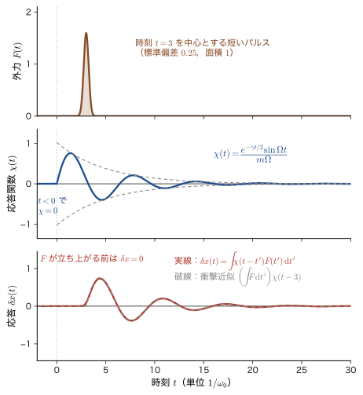
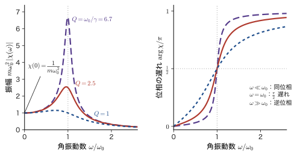
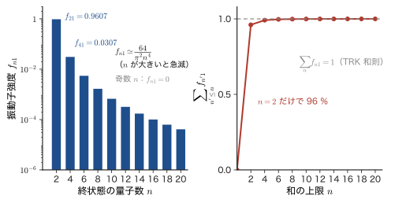
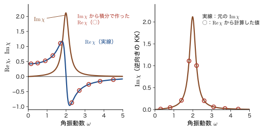
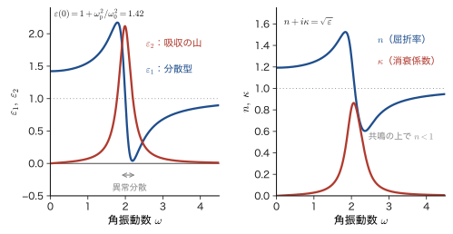
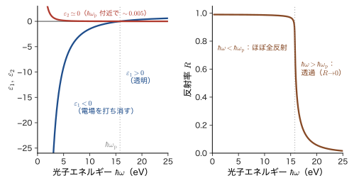
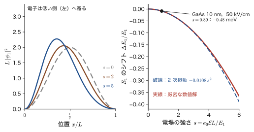

第54章線形応答と Kubo 公式の入口 — 応答関数・因果律・Kramers–Kronig・複素誘電率
ブランコを一定のリズムで押してやると，押す力が小さくても，リズムが合えば大きく揺れる．押す力を 2 倍にすれば揺れも 2 倍になり，押すのをやめればやがて止まる．このように，外から加えた「刺激」に比例して返ってくる「反応」を，物理では応答（response）という．質量とばねと抵抗からなる強制減衰振動子（AD 03「大学基礎物理学」第7章 7.4）はその代表で，力 $F$ に対する変位 $x$ の比 $\chi=x/F$ が，共鳴の山や位相の遅れを含めてすべてを語る．物質に光をあてたときも同じである．光の電場 $\bm{E}$ に比例して物質の中に分極 $\bm{P}$ が生じ，その比が誘電率や屈折率を決める．ガラスが透明であること，金属が光を反射すること，色素が特定の色を吸収することは，すべて「電場に対する物質の応答」の現れである．
この章の目標は，同じ考え方を量子力学に持ち込むことである．系のハミルトニアンが $\hat{H}=\hat{H}_0-F(t)\hat{B}$ であるとき，外力 $F(t)$ に対して物理量 $\hat{A}$ の期待値がどう変わるかを，前章までに準備した 1 次の時間依存摂動論（第50章，第51章）から導く．結果は $\delta\langle\hat{A}\rangle(t)=\int\chi_{AB}(t-t')F(t')\,\dd t'$ という畳み込みで，応答関数 $\chi_{AB}(t)$ は，外場を加える前の系での交換子の期待値 $\chi_{AB}(t)=\dfrac{i}{\hbar}\theta(t)\langle\comm{\hat{A}_H(t)}{\hat{B}_H(0)}\rangle$ で与えられる（Kubo 公式）．この式には外場 $F$ が現れない．「叩く前の系の性質」だけで「叩いたときの返事」が決まるのである．
応答関数には，3 つの顔がある．時間で見ると，原因は結果に先立つので，$t\lt0$ で $\chi=0$（因果律）である．振動数で見ると，$\chi(\omega)$ は系の励起エネルギーのところに極をもつ（Lehmann 表示）．そして複素 $\omega$ 平面で見ると，因果律のおかげで上半面で解析的になり，その結果，実部と虚部が独立ではなく，一方がわかれば他方が決まる（Kramers–Kronig 関係）．吸収スペクトル（虚部）を全域で測れば，屈折率（実部）が計算できるのである．ガラスの屈折率が波長とともに変わる（プリズムで虹ができる）理由は，可視光ではなく，遠い紫外の吸収にある．
この章は，姉妹編「線形応答理論（AD 08）」（目次）への入口である．記号はできるだけ AD 08 と揃えるが，外場との結合の符号の流儀だけが違う（54.2 節の囲み）．材料の例として，半導体の量子井戸に電場をかけたときの吸収端のシフト（量子閉じ込め Stark 効果），ガラスの分散，金属（Al）の反射とプラズマ周波数を取り上げる．
- 古典の強制減衰振動子の応答関数 $\chi(\omega)=1/[m(\omega_0^2-\omega^2-i\gamma\omega)]$ から，共鳴・位相の遅れ・$Q$ 値を読み取り，応答を $\delta x(t)=\int\chi(t-t')F(t')\dd t'$ と書くこと
- $\hat{H}=\hat{H}_0-F(t)\hat{B}$ の 1 次摂動から，線形応答と Kubo 公式 $\chi_{AB}(t)=\dfrac{i}{\hbar}\theta(t)\langle\comm{\hat{A}_H(t)}{\hat{B}_H(0)}\rangle$ を導き，「なぜ交換子か」を説明すること
- 断熱印加 $e^{\eta t}$ と Fourier 変換 $\chi(\omega)=\int_0^\infty\chi(t)e^{i(\omega+i\eta)t}\dd t$（時間核 $e^{+i\omega t}$）を使い，調和振動子と 2 準位系で Kubo 公式を検算すること
- Lehmann 表示 $\chi_{AB}(\omega)=\dfrac1\hbar\sum_n\Bigl[\dfrac{A_{0n}B_{n0}}{\omega_{n0}-\omega-i\eta}+\dfrac{B_{0n}A_{n0}}{\omega_{n0}+\omega+i\eta}\Bigr]$ を導き，分極率と振動子強度，Thomas–Reiche–Kuhn の和則 $\sum_nf_{n0}=1$ を理解すること
- 因果律から $\chi(\omega)$ が上半面で解析的であることを示し，Cauchy の積分公式から Kramers–Kronig 関係と静的極限 $\chi(0)=\dfrac2\pi\int_0^\infty\dfrac{\mathrm{Im}\,\chi(\omega')}{\omega'}\dd\omega'$ を導くこと
- 複素誘電率 $\varepsilon=\varepsilon_1+i\varepsilon_2$，複素屈折率 $n+i\kappa=\sqrt{\varepsilon}$，吸収係数 $\alpha_{\mathrm{abs}}=2\omega\kappa/c$ を使い，Lorentz 模型と Drude 模型（Al のプラズマ周波数）でスペクトルを読むこと
- 静的極限が 2 次摂動（Stark 効果，分極率）と一致することを確かめ，量子閉じ込め Stark 効果 $\Delta E_1=-\dfrac{15-\pi^2}{24\pi^4}\dfrac{m^*(e_0\mathcal{E})^2L^4}{\hbar^2}$ を見積もること．AD 08 との符号の違い（$f=-F$，$\chi^{\mathrm{R}}=-\chi$）を正しく換算すること
もとにしたノート：本章はノートにない内容を補った章である．関連するノート：望月泰英『物理学ノート 量子力学3』 pp. 69–71（励起状態では時間変化を追う）．
54.1 外場に対する応答 — 古典の減衰振動子から量子へ
54.1.1 「叩いて，返事を聞く」という見方
物質の性質の多くは，「外から何かを加えて，何が返ってくるかを見る」ことでわかる．誘電体に電場を加えると分極が返ってくる．磁性体に磁場を加えると磁化が返ってくる．ガラスに光を通すと，光の進み方（屈折）と弱まり方（吸収）が返ってくる．こうした「入力 → 系 → 出力」の関係を応答（response）と呼ぶ．入力が十分に弱ければ，出力は入力に比例する．入力を 2 倍にすれば出力も 2 倍になり，2 つの入力を同時に加えれば，出力はそれぞれの出力の和になる．これが線形応答（linear response）である．
線形応答の考え方は，量子力学よりずっと前に，古典力学で完成していた．まず古典の場合をきちんと解いて，「応答関数」と「因果律」という道具を手に入れよう．そのうえで，同じ構造が量子力学でもそのまま成り立つことを，次節で示す．
54.1.2 古典の強制減衰振動子 — 応答関数 $\chi(\omega)$
質量 $m$ の物体が，ばね定数 $k=m\omega_0^2$ のばねにつながれ，速度に比例する抵抗 $-m\gamma\dot{x}$ を受けながら，外力 $F(t)$ で揺すられているとする．運動方程式は
\begin{equation} m\ddot{x}+m\gamma\dot{x}+m\omega_0^2x=F(t) \label{eq:54-eom} \end{equation}である．$\omega_0=\sqrt{k/m}$ は抵抗のないときの固有角振動数，$\gamma\ (\gt0)$ は減衰率（単位は $\mathrm{s^{-1}}$）である．AD 03 第7章 7.3 節では抵抗係数を $n\ [\mathrm{N\,s/m}]$ と書いたので，$n=m\gamma$ の関係にある．
導出：外力が単振動のとき，応答は力に比例する
外力を，複素数を使って $F(t)=\mathrm{Re}\bigl[F_\omega e^{-i\omega t}\bigr]$（$F_\omega$ は複素振幅，実際の力は実部）と書く．$x(t)=\mathrm{Re}\bigl[x_\omega e^{-i\omega t}\bigr]$ と置いて式 \eqref{eq:54-eom} に代入する．$e^{-i\omega t}$ を時間で 1 回微分すると $-i\omega$ 倍，2 回微分すると $(-i\omega)^2=-\omega^2$ 倍になるので，
$$ m\bigl(-\omega^2\bigr)x_\omega+m\gamma\bigl(-i\omega\bigr)x_\omega+m\omega_0^2x_\omega=F_\omega \quad\Longrightarrow\quad m\bigl(\omega_0^2-\omega^2-i\gamma\omega\bigr)\,x_\omega=F_\omega $$となる（実部をとる操作は線形なので，方程式に代入してから実部をとってよい．AD 03 7.4 節と同じ手順）．したがって振幅の比は
\begin{equation} x_\omega=\chi(\omega)\,F_\omega,\qquad \chi(\omega)=\frac{1}{m\bigl(\omega_0^2-\omega^2-i\gamma\omega\bigr)} \label{eq:54-chi-cl} \end{equation}である．$\chi(\omega)$ を，この系の応答関数（response function，複素感受率）という．過渡的な（初期条件による）振動は，抵抗のために $e^{-\gamma t/2}$ で減衰して消え，外力の振動数で振動する定常解 \eqref{eq:54-chi-cl} だけが残る．
（導出終わり）
注意：時間因子の向き — $e^{-i\omega t}$ と $e^{+i\omega t}$
AD 03 では，外力を $f_0e^{i\omega t}$ と書いて解いた（分母が $(k-m\omega^2)+in\omega$ になる）．本書は，Schrödinger 方程式の位相 $e^{-iEt/\hbar}$ と平面波 $e^{i(kx-\omega t)}$ に合わせて，時間因子を $e^{-i\omega t}$ に統一する．このとき，分母の虚部は $-i\gamma\omega$ になり，AD 03 の結果の複素共役になる．どちらの書き方でも，実際に観測される実の変位 $x(t)$ は同じである．以後，本書と線形応答理論（AD 08）は $e^{-i\omega t}$ の流儀を使う．この流儀では，$\mathrm{Im}\,\chi(\omega)\gt0$（$\omega\gt0$）が吸収に対応する（54.3 節）．
式 \eqref{eq:54-chi-cl} は「単振動する力」に対する答えである．任意の時間変化をする力 $F(t)$ に対する答えは，次のように考える．力を，短い時間 $\dd t'$ のあいだだけ働く衝撃 $F(t')\,\dd t'$ の積み重ねとみなす．運動方程式は線形なので，答えは，それぞれの衝撃に対する答えの和である．時刻 $0$ に単位の力積を与える（$F(t)=\delta(t)$）ときの変位を $\chi(t)$ と書くと，$\chi(t)$ は
\begin{equation} m\ddot{\chi}+m\gamma\dot{\chi}+m\omega_0^2\chi=\delta(t),\qquad\chi(t)=0\quad(t\lt0) \label{eq:54-chi-def} \end{equation}の解である．時刻 $0$ の直前まで静止していたので，$t\lt0$ では $\chi=0$ である．$t=0$ の前後で式 \eqref{eq:54-chi-def} を積分すると，$\chi$ は連続（$\chi(0)=0$），速度は力積ぶん $m\dot\chi(0^+)=1$ だけ跳ぶ．それ以降（$t\gt0$）は同次方程式の解で，減衰振動 $\gamma\lt2\omega_0$ の場合は，AD 03 7.3 節の一般解 $e^{-\gamma t/2}(C_1\cos\Omega t+C_2\sin\Omega t)$ から $\chi(0)=0$，$\dot\chi(0)=1/m$ を満たすものを選んで，
\begin{equation} \chi(t)=\theta(t)\,\frac{e^{-\gamma t/2}\sin\Omega t}{m\Omega},\qquad\Omega=\sqrt{\omega_0^2-\frac{\gamma^2}{4}} \label{eq:54-chi-t} \end{equation}である．$\theta(t)$ は階段関数（$t\lt0$ で $0$，$t\gt0$ で $1$）．$\chi(t)$ をインパルス応答（impulse response），または（数学では）Green 関数という（大学数学 第36章 36.1，AD 08 第2章）．任意の力に対する答えは，衝撃 $F(t')\dd t'$ が時刻 $t'$ に与えられ，その影響が時間 $t-t'$ だけ遅れて時刻 $t$ に届くことを足し合わせて
\begin{equation} x(t)=\int_{-\infty}^{\infty}\chi(t-t')\,F(t')\,\dd t' \label{eq:54-conv} \end{equation}と書ける（畳み込み積分）．$\chi(t-t')=0$（$t'\gt t$）なので，積分の上限は実質的に $t$ であり，時刻 $t$ の変位には，それより前の力だけが効く．図54.1 に，短いパルス力を加えたときの応答を示す．力が立ち上がる前は $x=0$ で，応答は力に遅れて現れ，$\chi(t)$ の形に従って減衰振動する．パルスが短ければ，応答は，力の全体の強さ（面積 $\int F\dd t'$）に $\chi(t-3)$ を掛けたもの（破線）でおおまかに近似できる（パルスが短いほどよく一致する．この図の例では，両者の最大の差は破線の最大値の約 12 %）．

式 \eqref{eq:54-chi-def} の $\chi(t)$ と式 \eqref{eq:54-chi-cl} の $\chi(\omega)$ は同じ名前で呼んだが，実は Fourier 変換の関係にある．
定義54.1 応答関数の時間表示と振動数表示（本書の Fourier 規約）
時間の関数 $f(t)$ の Fourier 変換を，時間核 $e^{+i\omega t}$ で
\begin{equation} \tilde{f}(\omega)=\int_{-\infty}^{\infty}f(t)\,e^{i\omega t}\,\dd t,\qquad f(t)=\frac{1}{2\pi}\int_{-\infty}^{\infty}\tilde{f}(\omega)\,e^{-i\omega t}\,\dd\omega \label{eq:54-ft} \end{equation}と定義する．このとき，応答関数の時間表示 $\chi(t)$ と振動数表示 $\chi(\omega)$ は $\chi(\omega)=\displaystyle\int_{-\infty}^{\infty}\chi(t)\,e^{i\omega t}\,\dd t$ で結ばれる．畳み込み \eqref{eq:54-conv} の Fourier 変換は積になる：$\tilde{x}(\omega)=\chi(\omega)\tilde{F}(\omega)$．
時間核が $e^{+i\omega t}$ になる理由は，応答を $e^{-i\omega t}$ で解いた上の導出から先に見える．力を $F(t')=F_\omega e^{-i\omega t'}$ として畳み込み \eqref{eq:54-conv} に入れ，$s=t-t'$ と置くと，$e^{-i\omega t'}=e^{-i\omega t}\,e^{+i\omega s}$ なので
$$ x(t)=\int_{-\infty}^{\infty}\chi(s)\,F_\omega e^{-i\omega(t-s)}\dd s=F_\omega e^{-i\omega t}\int_{-\infty}^{\infty}\chi(s)\,e^{+i\omega s}\dd s=\chi(\omega)\,F_\omega e^{-i\omega t} $$となり，$\chi(s)$ に掛かる核は自然に $e^{+i\omega s}$ になる（これが式 \eqref{eq:54-chi-cl} の $\chi(\omega)$ である）．外力の時間因子 $e^{-i\omega t}$ と，応答関数を振動数表示にするときの核 $e^{+i\omega s}$ は，符号が逆になるのである．
この規約（順変換の核が $e^{+i\omega t}$，逆変換が $e^{-i\omega t}$）は，平面波 $e^{i(kx-\omega t)}$ や $\Psi\propto e^{-iEt/\hbar}$ の位相と整合する．空間の Fourier 変換 $\phi(p)\propto\int\psi(x)e^{-ipx/\hbar}\dd x$ の核が $e^{-ipx/\hbar}$ であるのと，符号が逆になっている．時間と空間で核の符号が逆なのは，平面波 $e^{i(kx-\omega t)}$ の位相で $\omega t$ と $kx$ が逆の符号で入っているからである．線形応答理論（AD 08）も同じ規約を使う．
導出：$\chi(t)$ を Fourier 変換すると式 \eqref{eq:54-chi-cl} に戻る
式 \eqref{eq:54-chi-t} で $\sin\Omega t=\dfrac{e^{i\Omega t}-e^{-i\Omega t}}{2i}$ とすると，$t\gt0$ で
$$ \chi(\omega)=\int_0^\infty\frac{e^{-\gamma t/2}\sin\Omega t}{m\Omega}\,e^{i\omega t}\dd t =\frac{1}{2im\Omega}\int_0^\infty\Bigl[e^{i(\omega+\Omega+i\gamma/2)t}-e^{i(\omega-\Omega+i\gamma/2)t}\Bigr]\dd t $$である．複素数 $z$ が $\mathrm{Im}\,z\gt0$ なら，$\displaystyle\int_0^\infty e^{izt}\dd t=\Bigl[\dfrac{e^{izt}}{iz}\Bigr]_0^\infty=\dfrac{i}{z}$ である（$t\to\infty$ で $\abs{e^{izt}}=e^{-\mathrm{Im}\,z\,t}\to0$）．いまは $z=\omega\pm\Omega+i\gamma/2$ で虚部が $\gamma/2\gt0$ だから使える．
$$ \chi(\omega)=\frac{1}{2im\Omega}\left[\frac{i}{\omega+\Omega+i\gamma/2}-\frac{i}{\omega-\Omega+i\gamma/2}\right] =\frac{1}{2m\Omega}\cdot\frac{(\omega-\Omega+i\gamma/2)-(\omega+\Omega+i\gamma/2)}{(\omega+i\gamma/2)^2-\Omega^2} =\frac{-1}{m}\cdot\frac{1}{(\omega+i\gamma/2)^2-\Omega^2} $$分母は，$(\omega+i\gamma/2)^2-\Omega^2=\omega^2+i\gamma\omega-\dfrac{\gamma^2}{4}-\Omega^2=\omega^2+i\gamma\omega-\omega_0^2$ なので，$\chi(\omega)=\dfrac{1}{m(\omega_0^2-\omega^2-i\gamma\omega)}$ となり，式 \eqref{eq:54-chi-cl} に一致する．
（導出終わり）
応答関数 $\chi(\omega)$ の分母 $\omega_0^2-\omega^2-i\gamma\omega$ の零点は $\omega=\pm\Omega-i\gamma/2$ で，どちらも下半面（虚部が負）にある．これは $\chi(t)$ が $t\gt0$ にしか値をもたないことの，複素平面での表れである．54.4 節で，この事実から Kramers–Kronig 関係を導く．
例題54.1 共鳴・位相の遅れ・$Q$ 値
$m=1$，$\omega_0=1$（単位は任意），$\gamma=0.4$ の減衰振動子について，(1) $\abs{\chi(\omega)}$ が最大になる角振動数 $\omega_{\mathrm r}$ と最大値，(2) $\omega=\omega_0$ での $\chi$ の値と，応答が外力より遅れる位相，(3) $Q=\omega_0/\gamma$ と共鳴の幅を求めよ．
解答 (1) $\abs{\chi}^2=1/\bigl\{m^2D(\omega)\bigr\}$，$D(\omega)=(\omega_0^2-\omega^2)^2+\gamma^2\omega^2$ で，$\abs{\chi}$ が最大なのは $D$ が最小のときである．$u=\omega^2$ とおくと $D=(\omega_0^2-u)^2+\gamma^2u$，$\dfrac{\dd D}{\dd u}=-2(\omega_0^2-u)+\gamma^2=0$ より $u=\omega_0^2-\dfrac{\gamma^2}{2}$，すなわち
$$ \omega_{\mathrm r}=\sqrt{\omega_0^2-\frac{\gamma^2}{2}}=\sqrt{1-0.08}=0.9592 $$である（$\omega_0$ よりわずかに低い）．そのときの $D_{\min}=\gamma^2\omega_0^2-\dfrac{\gamma^4}{4}=\gamma^2\Bigl(\omega_0^2-\dfrac{\gamma^2}{4}\Bigr)=0.16\times0.96=0.1536$ なので，$\abs{\chi}_{\max}=\dfrac{1}{\sqrt{0.1536}}=2.552$．静的な応答 $\chi(0)=1/(m\omega_0^2)=1$ の約 2.55 倍である．
(2) $\omega=\omega_0$ では $\omega_0^2-\omega^2=0$ なので $\chi(\omega_0)=\dfrac{1}{-i\gamma m\omega_0}=\dfrac{i}{m\gamma\omega_0}=2.5\,i$ である．$\chi=\abs{\chi}e^{i\varphi}$ と書くと，外力 $F\cos\omega t=\mathrm{Re}[Fe^{-i\omega t}]$ に対する変位は $x(t)=\abs{\chi}F\cos(\omega t-\varphi)$ なので，応答は外力より位相 $\varphi$ だけ遅れる．$\chi(\omega_0)$ は純虚数で $\varphi=\pi/2$ だから，共鳴のとき変位は外力より $1/4$ 周期遅れる（$x=2.5F\sin\omega_0t$）．これは，「外力がいちばん強いときに物体は釣り合いの位置を速い速度で通過し，速度が外力と同位相で，抵抗に逆らってエネルギーを受け取っている」状態である．
(3) $Q=\omega_0/\gamma=2.5$ である．$\abs{\chi(\omega_0)}/\chi(0)=\dfrac{1/(m\gamma\omega_0)}{1/(m\omega_0^2)}=\dfrac{\omega_0}{\gamma}=Q$ なので，$Q$ は「共鳴のときの応答が静的な応答の何倍か」でもある．共鳴曲線 $\abs{\chi}^2$ が最大値の半分になる 2 つの角振動数は $\omega=0.727,\ 1.145$ で，半値全幅は $0.419$，ほぼ $\gamma=0.4$ に等しい．一般に，減衰が弱ければ（$\gamma\ll\omega_0$）半値全幅は $\gamma$ で，$Q=\omega_0/\gamma$ は共鳴の鋭さを表す．位相は，低振動数で $0$（力と同位相），$\omega_0$ で $\pi/2$，高振動数で $\pi$（逆位相）へと変わる（図54.2）．

例題54.2 階段状の力に対する応答 — 静的応答との関係
時刻 $0$ に一定の力 $F_0$ を加え始める（$F(t)=F_0\theta(t)$）．(1) 式 \eqref{eq:54-conv} で $x(t)$ を求め，(2) $t\to\infty$ の変位が $F_0\chi(0)$ になること，(3) $m=1$，$\omega_0=1$，$\gamma=0.4$ のとき，変位の最大値は最終値の何倍で，いつ現れるかを示せ．
解答 (1) $F(t')=F_0\theta(t')$ を式 \eqref{eq:54-conv} に入れると，$t'\lt0$ で $F=0$，$t'\gt t$ で $\chi(t-t')=0$ なので，$x(t)=F_0\displaystyle\int_0^{t}\chi(t-t')\dd t'=F_0\int_0^{t}\chi(s)\dd s$（$s=t-t'$ と置いた）．式 \eqref{eq:54-chi-t} を積分する．次の式の右辺を $t$ で微分してみると，
$$ \frac{\dd}{\dd t}\Bigl\{1-e^{-\gamma t/2}\Bigl(\cos\Omega t+\frac{\gamma}{2\Omega}\sin\Omega t\Bigr)\Bigr\} =e^{-\gamma t/2}\Bigl[\Bigl(\frac{\gamma^2}{4\Omega}+\Omega\Bigr)\sin\Omega t\Bigr]=\frac{\omega_0^2}{\Omega}\,e^{-\gamma t/2}\sin\Omega t $$（$\cos$ の項は $\dfrac\gamma2-\dfrac\gamma2=0$ で消え，$\dfrac{\gamma^2}{4}+\Omega^2=\omega_0^2$ を使った）となるので，
$$ x(t)=\frac{F_0}{m\omega_0^2}\Bigl[1-e^{-\gamma t/2}\Bigl(\cos\Omega t+\frac{\gamma}{2\Omega}\sin\Omega t\Bigr)\Bigr] $$である（$t=0$ で $x=0$ を満たす）．(2) $t\to\infty$ で指数関数が $0$ になり，$x\to F_0/(m\omega_0^2)=F_0\chi(0)$，$\chi(0)=\displaystyle\int_0^\infty\chi(t)\dd t$ である．一定の力に対する最終的な変位は，ばねが $F_0$ とつり合う位置で，$\omega=0$ の応答関数の値に等しい．(3) 速度 $\dot{x}\propto\chi(t)\propto\sin\Omega t$ が最初に $0$ になるのは $t=\pi/\Omega$ で，そのとき $\cos\Omega t=-1$，$\sin\Omega t=0$ なので，$x_{\max}=x_\infty\bigl[1+e^{-\pi\gamma/(2\Omega)}\bigr]$．$\Omega=\sqrt{1-0.04}=0.9798$ で，$\pi\gamma/(2\Omega)=0.6413$，$e^{-0.6413}=0.5266$，したがって $x_{\max}=1.527\,x_\infty$，$t=\pi/\Omega=3.21$（単位 $1/\omega_0$）に現れる．階段状の力に対して，変位は最終値を行き過ぎ（オーバーシュート），減衰振動しながら最終値に収束する．
54.1.3 量子力学での問い — $\hat{H}=\hat{H}_0-F(t)\hat{B}$
量子力学の系に，外から弱い力を加える．前の項の古典の力 $F(t)$ は，ポテンシャルエネルギー $-F\,x$ を通して系と結びついていた（力は，ポテンシャルエネルギー $V=-Fx$ から $-\partial V/\partial x=F$ として得られる）．これを一般化して，Hamilton 演算子が
\begin{equation} \hat{H}(t)=\hat{H}_0+\hat{H}_1(t),\qquad\hat{H}_1(t)=-F(t)\,\hat{B} \label{eq:54-H1} \end{equation}であるとする．$\hat{H}_0$ は外場がないときの時間に依らない Hamilton 演算子（解けていなくてもよい），$\hat{B}$ は外場が系のどこに結合するかを決めるエルミート演算子，$F(t)$ は実数の関数（ただの数）で，外場の強さの時間変化を表す．$F$ と $\hat{B}$ は「掛けるとエネルギーになる組」である．代表的な組を表54.1 に示す．
| 外場 $F(t)$ | 結合する演算子 $\hat{B}$ | $\hat{H}_1$ | 応答として測る $\hat{A}$ の例 |
|---|---|---|---|
| 外力 $F$ | 位置 $\hat{x}$ | $-F\hat{x}$ | 位置 $\hat{x}$ |
| 電場 $\bm{E}(t)$ | 電気双極子モーメント $\hat{\bm{d}}$（電子では $\hat{\bm{d}}=-e_0\hat{\bm{r}}$） | $-\hat{\bm{d}}\cdot\bm{E}$ | 分極（双極子モーメント）$\hat{\bm{d}}$ |
| 磁束密度 $\bm{B}(t)$ | 磁気モーメント $\hat{\bm{\mu}}$ | $-\hat{\bm{\mu}}\cdot\bm{B}$ | 磁化（磁気モーメント）$\hat{\bm{\mu}}$ |
問いは次のとおりである．系が最初，$\hat{H}_0$ の基底状態 $\ket{0}$（または熱平衡状態）にあり，外場が時間とともに加わる．このとき，物理量 $\hat{A}$ の期待値 $\langle\hat{A}\rangle(t)=\mel{\psi(t)}{\hat{A}}{\psi(t)}$ は，外場がないときの値 $\langle\hat{A}\rangle_0$ から，どれだけずれるか．ずれを $\delta\langle\hat{A}\rangle(t)=\langle\hat{A}\rangle(t)-\langle\hat{A}\rangle_0$ と書き，$F$ の 1 次までで求めるのが，線形応答理論である．
定義54.2 線形応答と応答関数 $\chi_{AB}(t)$
外場 $\hat{H}_1=-F(t)\hat{B}$ に対する $\hat{A}$ の期待値の変化が，$F$ の 1 次の範囲で
\begin{equation} \delta\langle\hat{A}\rangle(t)=\int_{-\infty}^{\infty}\chi_{AB}(t-t')\,F(t')\,\dd t',\qquad\chi_{AB}(t)=0\quad(t\lt0) \label{eq:54-lr} \end{equation}と書けるとき，$\chi_{AB}(t)$ を $\hat{B}$ で叩いて $\hat{A}$ で測る応答関数（または，遅延応答関数）という．Fourier 変換 $\chi_{AB}(\omega)=\int\chi_{AB}(t)e^{i\omega t}\dd t$ を，感受率（susceptibility）という．
式 \eqref{eq:54-lr} は，古典の式 \eqref{eq:54-conv} と全く同じ形である．式 \eqref{eq:54-lr} を成り立たせている 3 つの前提を確認しておく．
- 線形性：応答が外場 $F$ に比例する（外場が弱い）．2 つの外場の和に対する応答は，それぞれの応答の和になる．
- 時間並進不変性：外場を加える時刻をずらすと，応答も同じだけずれるだけ．系の Hamilton 演算子 $\hat{H}_0$ が時間に依らないので，$\chi_{AB}$ は $t$ と $t'$ の差 $t-t'$ だけに依る．
- 因果律：時刻 $t'$ の外場は，時刻 $t\gt t'$ の物理量にしか影響しない．つまり $t\lt t'$ すなわち $\chi_{AB}(t-t')$ の引数が負のとき $\chi_{AB}=0$．
量子力学では，これらが仮定ではなく，Schrödinger 方程式の帰結として導かれる（次節）．なお，古典力学と違って，測る量 $\hat{A}$ と叩く量 $\hat{B}$ が一般に異なる演算子でもよい．たとえば電場を加えて電流を測る（伝導度），磁場を加えて電気分極を測る（磁気電気効果）といった場合である．$\hat{A}=\hat{B}$ は特別な場合で，位置を叩いて位置を測る古典の振動子の例がそれにあたる．
記号の断り：この章で重なりやすい文字
- $\chi$：一般の応答関数は $\chi_{AB}$（添字が 2 つ）と書く．電場に対する電気感受率（分極 $\bm{P}=\varepsilon_0\chi_{\mathrm e}\bm{E}$）は，添字 $\mathrm{e}$ を付けて $\chi_{\mathrm e}$ と書く（54.5 節）．スピン軌道 $\chi_i$（第33章以降．添字は軌道の番号）とは別の量である．時間の関数 $\chi(t)$ と振動数の関数 $\chi(\omega)$ は，引数で区別する．
- $\alpha$：分極率は $\alpha_{\mathrm p}$，吸収係数は $\alpha_{\mathrm{abs}}$，微細構造定数は $\alpha$（この章では使わない）．
- $F$ と $\mathcal{E}$：$F(t)$ は一般化した外力．電場の強さは $\mathcal{E}$ と書く（第27章・第28章では電場を $F$ と書いた）．電場のベクトルは $\bm{E}$，$\hat{B}$（ハット付き，演算子）と磁束密度 $\bm{B}$（太字）は別物．
- $e_0$：電気素量（$e_0=1.602\,176\,634\times10^{-19}\ \mathrm{C}$）．$e$ は Napier 数（$e^{-i\omega t}$ の $e$）．
- $\eta$：断熱因子（微小な正の数，最後に $\eta\to+0$）．減衰率 $\gamma$（有限の物理量）とは別．
- $\theta$：階段関数 $\theta(t)$ だけに使う（例題54.4 の無次元のパラメータは $a$，54.4 節の反射の位相は $\phi_{\mathrm r}(\omega)$ と書く）．
- $n$，$N$，$\mathcal{N}$：屈折率 $n$ と複素屈折率 $N=n+i\kappa$（54.5 節）は，状態の番号 $n$ や電子の数 $N$（和則）とは別の量．気体の数密度 $\mathcal{N}$（54.5.1 節）と伝導電子の数密度 $n_{\mathrm e}$（54.5.5 節）は，同じ種類の量（単位体積あたりの粒子数）である．
54.1.4 なぜ励起状態が顔を出すのか
ここで，量子力学に特有の事情を 1 つ確認しておく．第49章 49.1 節で見たように，$\hat{H}_0$ の固有状態（定常状態）は，時間が経っても確率分布が変わらない．基底状態にある系は，外場がなければ，何も起こさない．外場 $-F(t)\hat{B}$ が加わったときにだけ，状態は基底状態 $\ket{0}$ から動き出す．その動き方を 1 次の摂動論で考えると，外場は基底状態に励起状態 $\ket{n}$ を，$\mel{n}{\hat{B}}{0}$ に比例する割合で混ぜる（第27章の 1 次の波動関数の補正と同じ構造）．混ざった状態での $\hat{A}$ の期待値の変化は，「基底状態から励起状態へ（$\hat{B}$ で）混ぜ，励起状態から基底状態へ（$\hat{A}$ で）戻る」という過程 $\mel{0}{\hat{A}}{n}\mel{n}{\hat{B}}{0}$ の和になる．すなわち，応答の大きさは，励起状態を介した行列要素で決まる．
この事情から，2 つのことがわかる．(i) 励起エネルギー $\hbar\omega_{n0}=E_n-E_0$ が応答関数の「極」（共鳴）として現れる．外場の振動数が励起エネルギーに合うと，励起状態が強く混ざるからである（54.3 節）．(ii) $\mel{n}{\hat{B}}{0}=0$ がすべての $n$ で成り立つ（たとえば $\hat{B}$ が $\hat{H}_0$ と交換し，基底状態が $\hat{B}$ の固有状態であるとき）なら，外場は状態に何の変化も起こさず，応答は $0$ である．
古典の振動子にはこのような励起状態の話は出てこなかったが，調和振動子（54.2 節の例題54.3）では，基底状態から第 1 励起状態だけが混ざり，その結果が古典の応答関数と一致する．次節で，これを一般の場合に証明する．
54.2 Kubo 公式 — 1 次摂動論から
54.2.1 もっとも簡単な場合 — 衝撃で叩く
まず，外場が「時刻 $t'=0$ だけの鋭い衝撃」である場合を，近似なしで計算する．$F(t)=F_0\,\delta(t)$ とする（$F_0$ は力積にあたる）．時刻 $0$ の直前まで，系は $\hat{H}_0$ の基底状態 $\ket{0}$ にいた．衝撃が加わっている無限に短い時間のあいだは，Schrödinger 方程式
$$ i\hbar\frac{\partial}{\partial t}\ket{\psi(t)}=\bigl[\hat{H}_0-F_0\delta(t)\hat{B}\bigr]\ket{\psi(t)} $$の右辺で，$\delta$ 関数の項が $\hat{H}_0$ の項よりはるかに大きい．そこで $\hat{H}_0$ を無視して，$t=0$ の前後（$-0$ から $+0$）で積分すると，$\dfrac{\partial}{\partial t}\ket{\psi}=\dfrac{iF_0}{\hbar}\delta(t)\hat{B}\ket{\psi}$ より，衝撃の直後の状態は
\begin{equation} \ket{\psi(0^+)}=e^{+iF_0\hat{B}/\hbar}\ket{0} \label{eq:54-kick} \end{equation}である（$\hat{B}$ は時間に依らない演算子なので，指数関数の形に積分できる）．たとえば $\hat{B}=\hat{x}$ なら，$e^{iF_0\hat{x}/\hbar}$ は運動量を $F_0$ だけ増やす演算子（波動関数に位相 $e^{iF_0x/\hbar}$ を掛ける操作）で，力積 $F_0$ を与えたことに対応する．
衝撃のあと（$t\gt0$）は，外場がないので，状態は $\hat{H}_0$ だけで時間発展する：$\ket{\psi(t)}=e^{-i\hat{H}_0t/\hbar}\ket{\psi(0^+)}$．物理量 $\hat{A}$ の期待値は，$\hat{A}_H(t)=e^{i\hat{H}_0t/\hbar}\hat{A}e^{-i\hat{H}_0t/\hbar}$（外場のない $\hat{H}_0$ による Heisenberg 表示．第50章）を使って
$$ \langle\hat{A}\rangle(t)=\bra{0}\,e^{-iF_0\hat{B}/\hbar}\;\hat{A}_H(t)\;e^{+iF_0\hat{B}/\hbar}\,\ket{0} $$と書ける．$F_0$ が小さいとして 1 次まで展開しよう．$X=iF_0\hat{B}/\hbar$ とおくと，$e^{-X}\hat{A}_He^{X}=(1-X+\cdots)\hat{A}_H(1+X+\cdots)=\hat{A}_H+\hat{A}_HX-X\hat{A}_H+\cdots=\hat{A}_H+\comm{\hat{A}_H}{X}+\cdots$ である．ここで，交換子が自然に現れたことに注意する．したがって
\begin{equation} \langle\hat{A}\rangle(t)=\bra{0}\hat{A}_H(t)\ket{0}+\frac{iF_0}{\hbar}\bra{0}\comm{\hat{A}_H(t)}{\hat{B}}\ket{0}+O(F_0^2) \label{eq:54-kick-exp} \end{equation}である．第 1 項は，$\ket{0}$ が $\hat{H}_0$ の固有状態（$\hat{H}_0\ket{0}=E_0\ket{0}$）なので，位相 $e^{iE_0t/\hbar}e^{-iE_0t/\hbar}=1$ が打ち消し合って，時間に依らない値 $\langle\hat{A}\rangle_0$ である．結局，衝撃に対する応答は
$$ \delta\langle\hat{A}\rangle(t)=F_0\cdot\frac{i}{\hbar}\bra{0}\comm{\hat{A}_H(t)}{\hat{B}}\ket{0}\qquad(t\gt0) $$となる．定義 \eqref{eq:54-lr} で $F(t')=F_0\delta(t')$ とおくと $\delta\langle\hat{A}\rangle(t)=F_0\chi_{AB}(t)$ であるから，両者を比べて，$t\gt0$ で $\chi_{AB}(t)=\dfrac{i}{\hbar}\bra{0}\comm{\hat{A}_H(t)}{\hat{B}}\ket{0}$ を得る．$t\lt0$ では衝撃の前なので $\chi_{AB}=0$ である．そして，一般の外場 $F(t)$ は，衝撃 $F(t')\dd t'$ の重ね合わせ（線形性）なので，答えは式 \eqref{eq:54-lr} の畳み込みになる．
54.2.2 一般の外場 — 1 次の時間依存摂動論
衝撃でない一般の $F(t)$ に対しても，上の結果が成り立つことを，前章までに準備した摂動論で直接確かめよう．この計算は，摂動論の「1 次」がどこで出るかをはっきりさせるので，線形応答理論の出発点になる．
外場は，無限の過去から，ゆっくりスイッチを入れるものとする（断熱印加，第50章 50.6 節）：
\begin{equation} \hat{H}_1(t)=-F(t)\,e^{\eta t}\,\hat{B},\qquad\eta\to+0 \label{eq:54-H1-ad} \end{equation}$t\to-\infty$ で $e^{\eta t}\to0$ なので外場は $0$ で，系は $\hat{H}_0$ の基底状態 $\ket{0}$ にある，と言い切れる．$\eta$ は最後に $0$ にする（有限の時刻では $e^{\eta t}\to1$ なので，外場の値は変わらない）．
相互作用表示（第50章）で，状態は $\ket{\psi_I(t)}=\hat{U}(t,-\infty)\ket{0}$ と書け，時間発展演算子は $i\hbar\dfrac{\partial}{\partial t}\hat{U}=\hat{H}_{1I}(t)\hat{U}$ を満たす．外場は $F$ の 1 次までとるので，Dyson 級数を 1 次で打ち切ると，
\begin{equation} \hat{U}(t,-\infty)\simeq1-\frac{i}{\hbar}\int_{-\infty}^{t}\hat{H}_{1I}(t')\,\dd t'=1+\frac{i}{\hbar}\int_{-\infty}^{t}F(t')\,e^{\eta t'}\hat{B}_H(t')\,\dd t' \label{eq:54-U1} \end{equation}である（$\hat{H}_{1I}(t')=-F(t')e^{\eta t'}\hat{B}_H(t')$．相互作用表示の演算子 $\hat{B}_I(t')$ は，外場のない $\hat{H}_0$ による Heisenberg 表示の $\hat{B}_H(t')$ と同じものなので，以後 $\hat{B}_H(t')$ と書く）．期待値は，相互作用表示で $\langle\hat{A}\rangle(t)=\mel{\psi_I(t)}{\hat{A}_H(t)}{\psi_I(t)}=\mel{0}{\hat{U}^\dagger\hat{A}_H(t)\hat{U}}{0}$ と書ける．$\hat{U}^\dagger$ は式 \eqref{eq:54-U1} のエルミート共役で，$i\to-i$，$F,\eta$ は実数，$\hat{B}_H$ はエルミートなので，
$$ \hat{U}^\dagger(t,-\infty)\simeq1-\frac{i}{\hbar}\int_{-\infty}^{t}F(t')\,e^{\eta t'}\hat{B}_H(t')\,\dd t' $$となる．積の順序を保ったまま $\hat{U}^\dagger\hat{A}_H\hat{U}$ に代入して $F$ の 1 次までの項を集めると，
\begin{align} \delta\langle\hat{A}\rangle(t)&=\underbrace{-\frac{i}{\hbar}\int_{-\infty}^{t}F(t')e^{\eta t'}\bra{0}\hat{B}_H(t')\hat{A}_H(t)\ket{0}\dd t'}_{\text{ブラ側 }\hat{U}^\dagger\text{ から}} +\underbrace{\frac{i}{\hbar}\int_{-\infty}^{t}F(t')e^{\eta t'}\bra{0}\hat{A}_H(t)\hat{B}_H(t')\ket{0}\dd t'}_{\text{ケット側 }\hat{U}\text{ から}} \notag\\ &=\frac{i}{\hbar}\int_{-\infty}^{t}\bra{0}\comm{\hat{A}_H(t)}{\hat{B}_H(t')}\ket{0}\,F(t')\,e^{\eta t'}\,\dd t' \label{eq:54-first} \end{align}となる（$F^0$ の項は $\langle\hat{A}\rangle_0$，$F^2$ 以上の項は線形応答では捨てる）．符号が逆で演算子の順序も逆の 2 項が，交換子にまとまる．これが「なぜ交換子が現れるのか」の，計算上の答えである．
最後に，被積分関数の交換子の期待値が時刻の差 $t-t'$ にしか依らないことを示す．$\ket{0}$ が $\hat{H}_0$ の固有状態であることを使うと，$\bra{0}e^{i\hat{H}_0t/\hbar}=e^{iE_0t/\hbar}\bra{0}$，$e^{-i\hat{H}_0t'/\hbar}\ket{0}=e^{-iE_0t'/\hbar}\ket{0}$ なので，
$$ \bra{0}\hat{A}_H(t)\hat{B}_H(t')\ket{0}=e^{iE_0(t-t')/\hbar}\bra{0}\hat{A}\,e^{-i\hat{H}_0(t-t')/\hbar}\hat{B}\ket{0}=\bra{0}\hat{A}_H(t-t')\hat{B}_H(0)\ket{0} $$である（途中で $e^{i\hat{H}_0t/\hbar}\hat{A}e^{-i\hat{H}_0t/\hbar}e^{i\hat{H}_0t'/\hbar}\hat{B}e^{-i\hat{H}_0t'/\hbar}$ の中央の指数関数を $e^{-i\hat{H}_0(t-t')/\hbar}$ にまとめた）．$\hat{B}_H(t')\hat{A}_H(t)$ の項も同様である．階段関数 $\theta(t-t')$ を掛けて積分の上限を $+\infty$ にのばし，$\eta\to+0$ とすると，式 \eqref{eq:54-lr} の形が得られる．まとめよう．
定理54.1 Kubo 公式
$\hat{H}=\hat{H}_0-F(t)\hat{B}$ で，外場がない $\hat{H}_0$ の基底状態 $\ket{0}$ から出発する系の，$F$ の 1 次の応答は $\delta\langle\hat{A}\rangle(t)=\displaystyle\int_{-\infty}^{\infty}\chi_{AB}(t-t')F(t')\dd t'$ で，応答関数は
\begin{equation} \chi_{AB}(t)=\frac{i}{\hbar}\,\theta(t)\,\bra{0}\comm{\hat{A}_H(t)}{\hat{B}_H(0)}\ket{0} \label{eq:54-kubo} \end{equation}である．ここで $\hat{A}_H(t)=e^{i\hat{H}_0t/\hbar}\hat{A}e^{-i\hat{H}_0t/\hbar}$ は，外場のない $\hat{H}_0$ による Heisenberg 表示．有限温度では，$\bra{0}\cdots\ket{0}$ を熱平衡の期待値 $\langle\cdots\rangle=\mathrm{Tr}\bigl[e^{-\hat{H}_0/k_{\mathrm B}T}\cdots\bigr]/Z$ に置き換える．
この公式は，久保亮五（Kubo）が 1957 年に，統計力学の一般論として導いた．
有限温度の場合も，導出は同じである．熱平衡の密度演算子 $\hat\rho_0=e^{-\hat{H}_0/k_{\mathrm B}T}/Z$ は $\hat{H}_0$ と交換するので，時間に依らない（定常）で，上の議論で $\ket{0}$ が固有状態であることを使った箇所（時間並進不変性）がそのまま成り立つ．
次元の確認． $\hbar$ の単位が $\mathrm{J\,s}$ で，交換子の期待値の単位が $[A][B]$（$\hat{A},\hat{B}$ の単位の積）なので，$\chi_{AB}(t)$ の単位は $[A][B]/(\mathrm{J\,s})$ である．式 \eqref{eq:54-lr} で $F(t')\dd t'$（単位 $[F]\,\mathrm{s}$）を掛けると $[A][B][F]/\mathrm{J}$ となり，$[F][B]=\mathrm{J}$（$F$ と $\hat{B}$ は掛けるとエネルギーになる組）なので，$[A]$ に一致する．振動数表示の $\chi_{AB}(\omega)=\int\chi_{AB}(t)e^{i\omega t}\dd t$ は，さらに時間を掛けるので単位が $[A][B]/\mathrm{J}$ になる（例：電気双極子どうしの分極率 $\alpha_{\mathrm p}=\chi_{dd}$ は $(\mathrm{C\,m})^2/\mathrm{J}=\mathrm{C\,m^2/V}$）．
この式の読み方 — 「叩く前の系の性質」だけで応答が決まる
式 \eqref{eq:54-kubo} の右辺に，外場 $F$ は現れない．あるのは，外場を加える前の（$\hat{H}_0$ で時間発展する）系での，時刻 $t$ の $\hat{A}$ と時刻 $0$ の $\hat{B}$ の交換子の期待値だけである．外場が弱いかぎり，「叩いたときの返事」は「叩く前の系の揺らぎの性質」だけで決まる．この事実が，線形応答理論の出発点であり，たとえば伝導度や誘電率を，計算しやすい平衡状態の量から求めることを可能にしている．図54.3 は，応答が「過去の叩きの足し合わせ」であることを表している．
54.2.3 なぜ交換子か — 3 つの見方
考察：交換子が現れる理由
(a) 計算上の理由（ユニタリ性）． 期待値 $\mel{0}{\hat{U}^\dagger\hat{A}_H\hat{U}}{0}$ は，$\hat{U}$ の側と $\hat{U}^\dagger$ の側から 1 次の項が出る．時間発展がユニタリだと，$\hat{U}^\dagger$ の 1 次の項は $\hat{U}$ の 1 次の項の符号と順序が逆（エルミート共役）になる．符号が逆で順序が逆の 2 項の和は，交換子である（式 \eqref{eq:54-first}）．
(b) 物理的な理由（測定の非可換性）． 「$\hat{B}$ で叩いてから $\hat{A}$ を測る」ことと「叩かずに $\hat{A}$ を測る」ことの差が応答である．もし $\hat{A}_H(t)$ と $\hat{B}$ が交換するなら，叩いたことが $\hat{A}$ の測定値に全く影響しない．すなわち，応答は $0$ になる．逆に，交換しないとき，$\hat{B}$ で叩くことは $\hat{A}$ の値を乱し，その乱れが応答である（不確定性関係の物理：交換しない物理量の一方を操作すると，他方の値が乱される）．
(c) 古典極限． 古典力学では，Poisson 括弧 $\{A,B\}=\dfrac{\partial A}{\partial x}\dfrac{\partial B}{\partial p}-\dfrac{\partial A}{\partial p}\dfrac{\partial B}{\partial x}$（AD 03 第46章 46.3）が，量子力学の交換子に $\comm{\hat{A}}{\hat{B}}\to i\hbar\{A,B\}$ と対応する（第50章の Heisenberg の運動方程式と同じ対応）．このとき Kubo 公式は $\chi_{AB}(t)\to-\theta(t)\,\bigl\langle\{A(t),B(0)\}\bigr\rangle$ になる．たとえば調和振動子で $A=B=x$，$x(t)=x\cos\omega_0t+\dfrac{p}{m\omega_0}\sin\omega_0t$ なら，$\{x(t),x\}=\dfrac{\sin\omega_0t}{m\omega_0}\{p,x\}=-\dfrac{\sin\omega_0t}{m\omega_0}$ で，$\chi(t)=\theta(t)\dfrac{\sin\omega_0t}{m\omega_0}$ は，古典の式 \eqref{eq:54-chi-t} の $\gamma\to0$ と一致する．$\hbar$ が消えるので，量子力学の応答関数は，古典の応答関数を含むより一般的な式であることがわかる．
54.2.4 Fourier 変換と収束因子 $\eta$
応答関数を振動数で表すと，式が簡単になる．外場を $e^{\eta t'}$ 付きで，$F(t')=F_\omega e^{-i\omega t'}$（$F_\omega$ は定数）としよう．すると $F(t')e^{\eta t'}=F_\omega e^{-i(\omega+i\eta)t'}$ で，応答は，式 \eqref{eq:54-lr} で $s=t-t'$ と置いて，
$$ \delta\langle\hat{A}\rangle(t)=\int_{-\infty}^{t}\chi_{AB}(t-t')\,F_\omega e^{-i(\omega+i\eta)t'}\dd t' =F_\omega e^{-i(\omega+i\eta)t}\int_0^\infty\chi_{AB}(s)\,e^{i(\omega+i\eta)s}\dd s $$となる．右辺の積分を，$\chi_{AB}(\omega)$ と定義する：
\begin{equation} \chi_{AB}(\omega)=\int_0^\infty\chi_{AB}(t)\,e^{i(\omega+i\eta)t}\,\dd t\qquad(\eta\to+0) \label{eq:54-chi-w} \end{equation}これが定義54.1 の Fourier 変換（$\chi(t)$ は $t\lt0$ で $0$ なので積分は $0$ から）に，収束因子 $e^{-\eta t}$ を加えたものである．収束因子の役割は 2 つある．(i) $\chi_{AB}(t)$ が減衰しない振動（たとえば $\sin\omega_0t$）のとき，$\displaystyle\int_0^\infty e^{i\omega t}\dd t$ は実の $\omega$ では収束しない．$\omega\to\omega+i\eta$ にすると $\abs{e^{i(\omega+i\eta)t}}=e^{-\eta t}\to0$ で積分が収束する．(ii) それは，外場を断熱的に入れたこと（$e^{\eta t}$）の直接の帰結で，「外場が入った時刻の記憶が消え，定常応答だけが残る」ことに対応する．結果は，$\eta\to+0$ の極限で，$\chi_{AB}(\omega)$ は，複素 $\omega$ 平面で上半面（虚部が正）から実軸に近づいた値である．この「上半面から」という情報は，54.4 節で本質的になる．
応答そのものは，$\delta\langle\hat{A}\rangle(t)=\chi_{AB}(\omega)F_\omega e^{-i\omega t}$ で，外場と同じ振動数で振動し，振幅と位相が $\chi_{AB}(\omega)$ で決まる（古典の式 \eqref{eq:54-chi-cl} と同じ構造）．
54.2.5 例：調和振動子と 2 準位系
例題54.3 量子調和振動子の応答関数 — 古典と同じ答え
$\hat{H}_0=\dfrac{\hat{p}^2}{2m}+\dfrac12m\omega_0^2\hat{x}^2$ の調和振動子に，外力 $F(t)$ を $\hat{H}_1=-F(t)\hat{x}$ で加える．Kubo 公式で $\chi_{xx}(t)$ と $\chi_{xx}(\omega)$ を求め，古典の結果と比べよ．
解答 第50章の式（調和振動子の Heisenberg 表示）$\hat{x}_H(t)=\hat{x}\cos\omega_0t+\dfrac{\hat{p}}{m\omega_0}\sin\omega_0t$ を使う．$\comm{\hat{x}}{\hat{x}}=0$，$\comm{\hat{p}}{\hat{x}}=-i\hbar$ より，
$$ \comm{\hat{x}_H(t)}{\hat{x}_H(0)}=\frac{\sin\omega_0t}{m\omega_0}\comm{\hat{p}}{\hat{x}}=-\frac{i\hbar}{m\omega_0}\sin\omega_0t $$である．右辺は演算子を含まない数（c 数）なので，期待値をとる状態は何でもよい（基底状態でも，励起状態でも，有限温度でも同じ）．Kubo 公式 \eqref{eq:54-kubo} に代入すると，
$$ \chi_{xx}(t)=\frac{i}{\hbar}\theta(t)\Bigl(-\frac{i\hbar}{m\omega_0}\sin\omega_0t\Bigr)=\theta(t)\,\frac{\sin\omega_0t}{m\omega_0} $$となる．これは，減衰のない古典の調和振動子（式 \eqref{eq:54-chi-t} で $\gamma\to0$，$\Omega\to\omega_0$）のインパルス応答と一致する．$\hbar$ が消えている．Fourier 変換は，$\sin\omega_0t=(e^{i\omega_0t}-e^{-i\omega_0t})/2i$ と，$\mathrm{Im}\,z\gt0$ のときの $\displaystyle\int_0^\infty e^{izt}\dd t=\dfrac{i}{z}$ を $z=\omega\pm\omega_0+i\eta$ に使って，
$$ \chi_{xx}(\omega)=\frac{1}{2im\omega_0}\left[\frac{i}{\omega+\omega_0+i\eta}-\frac{i}{\omega-\omega_0+i\eta}\right]=\frac{1}{m}\cdot\frac{1}{\omega_0^2-(\omega+i\eta)^2}\xrightarrow{\ \eta\to+0\ }\frac{1}{m(\omega_0^2-\omega^2)} $$（途中は式 \eqref{eq:54-chi-cl} の導出と同じ計算）である．古典の応答関数 \eqref{eq:54-chi-cl} の $\gamma\to0$ の極限と一致する．断熱因子 $\eta$ の効果は，$(\omega+i\eta)^2=\omega^2+2i\eta\omega+\cdots$ より，無限小の減衰 $\gamma=2\eta$ に相当する．調和振動子のように $\hat{H}_0$ が「線形」な系では，量子力学の線形応答が古典力学と厳密に同じになる．
例題54.4 2 準位系の応答 — Kubo 公式と直接の時間発展
2 準位系 $\hat{H}_0=E_0\ket{0}\bra{0}+E_1\ket{1}\bra{1}$（$\hbar\omega_{10}=E_1-E_0$）で，位置の演算子が $\hat{x}=d\bigl(\ket{0}\bra{1}+\ket{1}\bra{0}\bigr)$（$d$ は実数）であるとする．時刻 $0$ に衝撃 $\hat{H}_1=-F_0\delta(t)\hat{x}$ を加える．(1) Kubo 公式から $\chi_{xx}(t)$ を求めよ．(2) 基底状態から出発して，衝撃後の状態を厳密に求め，$\langle\hat{x}\rangle(t)$ を計算し，(1) と比べよ．
解答 (1) $\hat{x}_H(t)=e^{i\hat{H}_0t/\hbar}\hat{x}e^{-i\hat{H}_0t/\hbar}=d\bigl(e^{-i\omega_{10}t}\ket{0}\bra{1}+e^{i\omega_{10}t}\ket{1}\bra{0}\bigr)$（$\ket{0}\bra{1}$ には，左に $e^{iE_0t/\hbar}$，右に $e^{-iE_1t/\hbar}$ が掛かる）．基底状態で期待値をとる．$\bra{0}\hat{x}_H(t)\hat{x}\ket{0}=d^2e^{-i\omega_{10}t}$，$\bra{0}\hat{x}\hat{x}_H(t)\ket{0}=d^2e^{+i\omega_{10}t}$ なので，
$$ \bra{0}\comm{\hat{x}_H(t)}{\hat{x}}\ket{0}=d^2\bigl(e^{-i\omega_{10}t}-e^{i\omega_{10}t}\bigr)=-2id^2\sin\omega_{10}t,\qquad \chi_{xx}(t)=\theta(t)\,\frac{2d^2}{\hbar}\sin\omega_{10}t $$である．(2) 式 \eqref{eq:54-kick} より，衝撃後の状態は $e^{iF_0\hat{x}/\hbar}\ket{0}$ である．$\hat{x}^2=d^2\bigl(\ket{0}\bra{0}+\ket{1}\bra{1}\bigr)=d^2\hat{1}$ なので，$a\equiv F_0d/\hbar$（無次元）として $e^{iF_0\hat{x}/\hbar}=\cos a+i\dfrac{\hat{x}}{d}\sin a$（$(\hat{x}/d)^2=\hat{1}$ で，$e^{ia\sigma}=\cos a+i\sigma\sin a$ と同じ）．よって
$$ \ket{\psi(0^+)}=\cos a\,\ket{0}+i\sin a\,\ket{1},\qquad \ket{\psi(t)}=e^{-iE_0t/\hbar}\bigl[\cos a\,\ket{0}+i\sin a\,e^{-i\omega_{10}t}\ket{1}\bigr] $$となる．$\langle\hat{x}\rangle=\mel{\psi}{\hat{x}}{\psi}=2d\,\mathrm{Re}\bigl[\cos a\cdot i\sin a\,e^{-i\omega_{10}t}\bigr]$ で，$\mathrm{Re}[ie^{-i\omega_{10}t}]=\sin\omega_{10}t$ だから
$$ \langle\hat{x}\rangle(t)=d\,\sin(2a)\,\sin\omega_{10}t=d\,\sin\Bigl(\frac{2F_0d}{\hbar}\Bigr)\sin\omega_{10}t $$である．$F_0$ が小さい（$a\ll1$）とき $\sin2a\simeq2a$ で，$\langle\hat{x}\rangle\simeq\dfrac{2d^2}{\hbar}F_0\sin\omega_{10}t=F_0\chi_{xx}(t)$ となり，(1) と一致する．さらに，厳密な式は，$F_0$ に比例して増え続けるのではなく，$\sin(2F_0d/\hbar)$ で頭打ちになる（$a=\pi/4$ で最大）．これは，線形応答が弱い外場（$F_0d\ll\hbar$）でのみ成り立つことの例である．
54.2.6 符号の違いについて — 本書と線形応答理論（AD 08）
AD 08 との符号の違い：$\hat{H}_1=-F\hat{B}$ と $\hat{H}_{\mathrm{ext}}=+f\hat{B}$
外場と系の結合の符号には，2 つの流儀がある．
- 本書：物理的な結合の形 $\hat{H}_1=-F(t)\hat{B}$（電場なら $-\hat{\bm{d}}\cdot\bm{E}$，磁場なら $-\hat{\bm{\mu}}\cdot\bm{B}$）．$F$ は外力．応答関数は $\chi_{AB}(t)=+\dfrac{i}{\hbar}\theta(t)\langle\comm{\hat{A}_H(t)}{\hat{B}_H(0)}\rangle$．Kubo の原論文を含む，統計力学・固体物理の多くの教科書がこの流儀．
- AD 08（Fetter–Walecka に従う多体論の流儀）：$\hat{H}_{\mathrm{ext}}=+f(t)\hat{B}$．外場 $f$ は「力」ではなく，$\hat{B}$ にプラスで結合する「ポテンシャルエネルギー」の強さ（密度応答では，外部ポテンシャルエネルギー $f=\phi_{\mathrm{ext}}$）．応答関数は $\chi^{\mathrm{R}}_{AB}(t)=-\dfrac{i}{\hbar}\theta(t)\langle\comm{\hat{A}_H(t)}{\hat{B}_H(0)}\rangle$．
同じ物理的な外場を書くとき，$\hat{H}_1=-F\hat{B}=+f\hat{B}$ より $f=-F$ である．同じ応答 $\delta\langle\hat{A}\rangle$ は，本書では $\chi F$，AD 08 では $\chi^{\mathrm R}f=\chi^{\mathrm R}(-F)$ と書かれるので，$\chi^{\mathrm{R}}_{AB}=-\chi_{AB}$ である．物理が違うのではなく，外場の符号の取り方の違いにすぎない（ここでの外場 $f(t)$ は，54.3 節の振動子強度 $f_{n0}$ とは別の量である）．違いは次の点に現れる．
- 調和振動子：本書は $\chi_{xx}(\omega)=+\dfrac{1}{m(\omega_0^2-\omega^2)}$（例題54.3），AD 08 は $\chi^{\mathrm R}_{xx}(\omega)=-\dfrac{1}{m(\omega_0^2-\omega^2)}$（力学的感受率と符号が逆）．
- 静的応答：本書は $\chi_{AA}(0)\gt0$（分極率 $\alpha_{\mathrm p}\gt0$．54.6 節），AD 08 は $\chi^{\mathrm R}_{AA}(0)\lt0$（密度応答 $\chi^0(\bm{q}\to0,\omega=0)=-N(\varepsilon_{\mathrm F})\lt0$ など）．
- 吸収：本書は $\omega\gt0$ で $\mathrm{Im}\,\chi\gt0$，AD 08 は $\mathrm{Im}\,\chi^{\mathrm R}\lt0$．
AD 08 の式を読むとき（または，本書の式を AD 08 に移すとき）は，$f\leftrightarrow-F$，$\chi^{\mathrm R}\leftrightarrow-\chi$ の置き換えをする．図54.4 に，両者の対応を表にした．他の教科書を読むときも，まず「外場をハミルトニアンにどう書いているか」を確かめるのが，符号に迷わない作法である．
54.3 Lehmann 表示，振動子強度と和則
54.3.1 完全系を挟む — Lehmann 表示
Kubo 公式 \eqref{eq:54-kubo} は，$\hat{H}_0$ が解けていなくても成り立つ一般的な式だが，$e^{-i\hat{H}_0t/\hbar}$ という演算子の指数関数を含んでいて，このままでは計算しにくい．$\hat{H}_0$ の固有状態 $\ket{n}$（$\hat{H}_0\ket{n}=E_n\ket{n}$，完全系 $\sum_n\ket{n}\bra{n}=\hat{1}$，$n=0$ が基底状態）を挟むと，指数関数が固有値の位相（ただの数）に変わる．励起エネルギーを $\hbar\omega_{n0}=E_n-E_0\ (\ge0)$，行列要素を $A_{mn}=\mel{m}{\hat{A}}{n}$，$B_{mn}=\mel{m}{\hat{B}}{n}$ と書く．
交換子の期待値を 2 つの項に分ける．第 1 項は，$\hat{A}_H(t)$ と $\hat{B}$ の間に完全系を挟み，$\bra{0}e^{i\hat{H}_0t/\hbar}=e^{iE_0t/\hbar}\bra{0}$，$e^{-i\hat{H}_0t/\hbar}\ket{n}=e^{-iE_nt/\hbar}\ket{n}$ を使って
$$ \bra{0}\hat{A}_H(t)\hat{B}\ket{0}=\sum_n\bra{0}e^{i\hat{H}_0t/\hbar}\hat{A}e^{-i\hat{H}_0t/\hbar}\ket{n}B_{n0}=\sum_nA_{0n}B_{n0}\,e^{i(E_0-E_n)t/\hbar}=\sum_nA_{0n}B_{n0}\,e^{-i\omega_{n0}t} $$となる．第 2 項は，$\hat{B}$ と $\hat{A}_H(t)$ の間に挟む．今度は $\bra{n}\hat{A}_H(t)\ket{0}=e^{i(E_n-E_0)t/\hbar}A_{n0}$ だから，位相の符号が逆になって
$$ \bra{0}\hat{B}\hat{A}_H(t)\ket{0}=\sum_nB_{0n}A_{n0}\,e^{+i\omega_{n0}t} $$である．したがって Kubo 公式は，励起振動数 $\omega_{n0}$ で振動する項の和になる：
\begin{equation} \chi_{AB}(t)=\frac{i}{\hbar}\theta(t)\sum_n\Bigl[A_{0n}B_{n0}\,e^{-i\omega_{n0}t}-B_{0n}A_{n0}\,e^{+i\omega_{n0}t}\Bigr] \label{eq:54-lehmann-t} \end{equation}$\hat{B}$ で基底状態を叩くと，励起状態 $\ket{n}$ が $B_{n0}$ の割合で混ざり，各成分が固有の振動数 $\omega_{n0}$ で位相を回しながら時間発展する．時刻 $t$ に $\hat{A}$ で測ると，$\ket{0}$ に戻る振幅 $A_{0n}$ が掛かる．応答は，「叩いて生じた励起が，それぞれ固有の振動数で鳴りながら返ってくる過程」の総和である（54.1.4 節の描像）．
次に Fourier 変換 \eqref{eq:54-chi-w} を行う．$\theta(t)$ のおかげで積分は $0$ から始まる．$\displaystyle\int_0^\infty e^{iz t}\dd t=\dfrac{i}{z}$（$\mathrm{Im}\,z\gt0$）を，$z=\omega-\omega_{n0}+i\eta$ と $z=\omega+\omega_{n0}+i\eta$ に使うと，
$$ \chi_{AB}(\omega)=\frac{i}{\hbar}\sum_n\Bigl[A_{0n}B_{n0}\frac{i}{\omega-\omega_{n0}+i\eta}-B_{0n}A_{n0}\frac{i}{\omega+\omega_{n0}+i\eta}\Bigr] $$で，$i\cdot i=-1$ だから，次の結果を得る．
定理54.2 Lehmann 表示（スペクトル表示）
\begin{equation} \chi_{AB}(\omega)=\frac{1}{\hbar}\sum_n\left[\frac{A_{0n}B_{n0}}{\omega_{n0}-\omega-i\eta}+\frac{B_{0n}A_{n0}}{\omega_{n0}+\omega+i\eta}\right],\qquad\omega_{n0}=\frac{E_n-E_0}{\hbar} \label{eq:54-lehmann} \end{equation}和は $\hat{H}_0$ のすべての固有状態についてとる（$n=0$ の項は，$\omega_{00}=0$ で 2 つの分数が打ち消し合うので，含めても含めなくても同じ）．
有限温度では，基底状態 $\ket{0}$ を，Boltzmann 重み $p_m=e^{-E_m/k_{\mathrm B}T}/Z$ をもつ状態 $\ket{m}$ の平均に置き換える．すると，式 \eqref{eq:54-lehmann} は $\chi_{AB}(\omega)=\dfrac1\hbar\displaystyle\sum_{m,n}\dfrac{(p_m-p_n)A_{mn}B_{nm}}{\omega_{nm}-\omega-i\eta}$（$\omega_{nm}=(E_n-E_m)/\hbar$）のように，分子に重みの差 $p_m-p_n$ が付いた形になる（AD 08 第8章，第13章）．$T=0$（$p_0=1$，ほかは $0$）で式 \eqref{eq:54-lehmann} に戻る．この章は $T=0$ で進める．
この式から読み取れることをまとめる．(i) 分母が $0$ に近づく（共鳴する）のは，外場の振動数 $\omega$ が励起振動数 $\omega_{n0}$ に一致するときである．応答関数の極は，系の励起エネルギーのところにある（古典の振動子で，極が $\omega=\pm\Omega-i\gamma/2$ にあったことに対応する）．(ii) 極は $\omega=\omega_{n0}-i\eta$ と $\omega=-\omega_{n0}-i\eta$ で，どちらも下半面にある．これが因果律（$\chi(t)$ が $t\gt0$ にしか値をもたない）の表れである（54.4 節）．(iii) 分子は「基底状態から励起状態 $n$ へ，$\hat{B}$ で叩き上げ，$\hat{A}$ で戻る」過程の振幅で，遷移が許されていないとき（選択則）は，その極は現れない．(iv) 励起状態が有限の寿命をもつ場合は，$\eta$ が有限の値（寿命の逆数の半分程度）になり，極は下半面の実軸から離れる（54.5 節）．
54.3.2 実部と虚部 — 吸収スペクトル
$\hat{B}=\hat{A}$（エルミート）の場合を考える．$\eta\to+0$ のとき，分数 $\dfrac{1}{x-i\eta}$ と $\dfrac{1}{x+i\eta}$ は，主値と $\delta$ 関数に分かれる（Sokhotski–Plemelj の公式，大学数学 第30章 30.6，AD 08 5.11 節）：
\begin{equation} \frac{1}{x\mp i\eta}=\mathrm{P}\frac{1}{x}\pm i\pi\,\delta(x)\qquad(\eta\to+0) \label{eq:54-sp} \end{equation}ここで P は主値（$x=0$ の近傍の特異性を，左右対称に除いた積分）を表す．式 \eqref{eq:54-lehmann} の 2 つの分数に，$x=\omega_{n0}-\omega$（上の符号）と $x=\omega_{n0}+\omega$（下の符号）を当てはめて，$\abs{A_{0n}}^2=A_{0n}A_{n0}$ を使うと，
\begin{align} \mathrm{Re}\,\chi_{AA}(\omega)&=\frac{1}{\hbar}\sum_n\abs{A_{0n}}^2\,\mathrm{P}\Bigl[\frac{1}{\omega_{n0}-\omega}+\frac{1}{\omega_{n0}+\omega}\Bigr],\label{eq:54-re}\\ \mathrm{Im}\,\chi_{AA}(\omega)&=\frac{\pi}{\hbar}\sum_n\abs{A_{0n}}^2\Bigl[\delta(\omega-\omega_{n0})-\delta(\omega+\omega_{n0})\Bigr]\label{eq:54-im} \end{align}となる．虚部は，励起振動数 $\omega=\omega_{n0}$ に $\delta$ 関数の山（重み $\abs{A_{0n}}^2$）をもつ線スペクトルで，$\omega\gt0$ で正，$\omega\lt0$ で負（$\omega$ の奇関数）である．実部は $\omega$ の偶関数で，共鳴の前後で符号が変わる分散型である．
導出：$\mathrm{Im}\,\chi$ は吸収される仕事率を与える
外力 $F(t)=F\cos\omega t=\mathrm{Re}[Fe^{-i\omega t}]$（$F$ は実数）のもとで，系が外場から受け取る仕事率（単位時間あたりのエネルギー）は，Hamilton 演算子の時間変化の期待値 $\Bigl\langle\dfrac{\partial\hat{H}}{\partial t}\Bigr\rangle=-\dot{F}(t)\langle\hat{B}\rangle(t)$ である．$\hat{A}=\hat{B}$ とする．応答関数 $\chi(t)$ は実数なので（54.4.3 節で示す），$F\cos\omega t$ に対する応答は $\langle\hat{B}\rangle-\langle\hat{B}\rangle_0=\mathrm{Re}\bigl[\chi(\omega)Fe^{-i\omega t}\bigr]$，また $\dot{F}=\mathrm{Re}\bigl[-i\omega Fe^{-i\omega t}\bigr]$ である．仕事率 $-\dot{F}\langle\hat{B}\rangle$ のうち，定数 $\langle\hat{B}\rangle_0$ の項は $\dot{F}$ の時間平均が $0$ なので寄与しない．2 つの振動の積の時間平均は，$\overline{\mathrm{Re}[ae^{-i\omega t}]\,\mathrm{Re}[be^{-i\omega t}]}=\tfrac12\mathrm{Re}[ab^*]$ だから，
$$ \overline{P}=-\tfrac12\mathrm{Re}\bigl[\chi F\cdot(-i\omega F)^*\bigr]=-\tfrac12\omega F^2\,\mathrm{Re}[i\chi]=\tfrac12\,\omega F^2\,\mathrm{Im}\,\chi(\omega) $$（$\mathrm{Re}[i\chi]=-\mathrm{Im}\,\chi$）である．したがって，$\omega\gt0$ で $\mathrm{Im}\,\chi\gt0$ なら，系は外場からエネルギーを吸収し続ける（散逸）．式 \eqref{eq:54-im} を代入すると，$\overline{P}=\dfrac{\pi\omega F^2}{2\hbar}\sum_n\abs{B_{n0}}^2\delta(\omega-\omega_{n0})$ で，これは Fermi の黄金律（第51章 51.2 節）の遷移率 $\dfrac{2\pi}{\hbar}\bigl|\mel{n}{\tfrac{F}{2}\hat{B}}{0}\bigr|^2\delta(E_n-E_0-\hbar\omega)$ に光子のエネルギー $\hbar\omega$ を掛けたものと一致する．虚部は，「吸収スペクトル」そのものである．
（導出終わり）
例題54.5 2 準位系の Lehmann 表示と分極率
励起エネルギー $\hbar\omega_{10}=3.0\ \mathrm{eV}$（波長 $413\ \mathrm{nm}$，可視の紫の端），遷移の位置の行列要素 $x_{10}=d=0.050\ \mathrm{nm}$ の 2 準位の「原子」がある．電場 $\mathcal{E}(t)$ を $\hat{H}_1=-\hat{d}_x\mathcal{E}$（$\hat{d}_x=-e_0\hat{x}$）で加える．(1) 分極率 $\alpha_{\mathrm p}(\omega)=\chi_{dd}(\omega)$ を Lehmann 表示で書き，例題54.4 の時間表示の Fourier 変換と一致することを確かめよ．(2) 静的分極率を体積 $\alpha_{\mathrm p}/(4\pi\varepsilon_0)$ で求めよ．(3) $\hbar\omega=1.0,\ 2.0,\ 3.5\ \mathrm{eV}$ での値を求めよ．ただし $e_0^2/(4\pi\varepsilon_0)=1.44\ \mathrm{eV\,nm}$．
解答 (1) $\hat{A}=\hat{B}=\hat{d}_x$ で，$d_{01}=d_{10}=-e_0d$．式 \eqref{eq:54-lehmann} の $n=1$ の項だけが残り，
$$ \alpha_{\mathrm p}(\omega)=\frac{e_0^2d^2}{\hbar}\left[\frac{1}{\omega_{10}-\omega-i\eta}+\frac{1}{\omega_{10}+\omega+i\eta}\right]=\frac{2e_0^2d^2}{\hbar}\,\frac{\omega_{10}}{\omega_{10}^2-(\omega+i\eta)^2} $$（通分して $(\omega_{10}-z)(\omega_{10}+z)=\omega_{10}^2-z^2$，$z=\omega+i\eta$）である．例題54.4 の $\chi_{xx}(t)=\theta(t)\dfrac{2d^2}{\hbar}\sin\omega_{10}t$ を Fourier 変換すると（例題54.3 と同じ計算で）$\dfrac{2d^2}{\hbar}\dfrac{\omega_{10}}{\omega_{10}^2-(\omega+i\eta)^2}$ になり，$\hat{d}=-e_0\hat{x}$ で $e_0^2$ 倍すれば一致する．
(2) $\omega=0$ で $\alpha_{\mathrm p}(0)=\dfrac{2e_0^2d^2}{\hbar\omega_{10}}$ なので，$\dfrac{\alpha_{\mathrm p}(0)}{4\pi\varepsilon_0}=\dfrac{2\,[e_0^2/(4\pi\varepsilon_0)]\,d^2}{\hbar\omega_{10}}=\dfrac{2\times1.44\ \mathrm{eV\,nm}\times(0.050\ \mathrm{nm})^2}{3.0\ \mathrm{eV}}=2.40\times10^{-3}\ \mathrm{nm^3}=2.40\ \text{Å}^3$．これは，水素原子の $0.667\ \text{Å}^3$（54.6 節）の約 3.6 倍で，原子としてはふつうの大きさである．
(3) 体積の単位で $\dfrac{\alpha_{\mathrm p}(\omega)}{4\pi\varepsilon_0}=\dfrac{2\,[e_0^2/(4\pi\varepsilon_0)]\,d^2\,\hbar\omega_{10}}{(\hbar\omega_{10})^2-(\hbar\omega)^2}=\dfrac{2\times1.44\times0.0025\times3.0}{9.0-(\hbar\omega)^2}\ \mathrm{nm^3}=\dfrac{0.0216}{9.0-(\hbar\omega)^2}\ \mathrm{nm^3}$（$\hbar\omega$ は eV）．$\hbar\omega=1.0$：$0.0216/8.0=2.70\times10^{-3}\ \mathrm{nm^3}=2.70\ \text{Å}^3$．$2.0$：$0.0216/5.0=4.32\ \text{Å}^3$．$3.5$：$0.0216/(9.0-12.25)=-6.65\ \text{Å}^3$．振動数が上がるにつれて分極率は増え（正常分散），共鳴 $\hbar\omega=3.0\ \mathrm{eV}$ で発散し，それより高振動数では符号が負になる（外場に対して逆位相に応答する）．
数値で確かめる：任意の行列での Lehmann 表示
Lehmann 表示 \eqref{eq:54-lehmann} は 2 準位系に限らず，どんなエルミート行列の $\hat{H}_0,\hat{A},\hat{B}$ でも成り立つ．これを，準位が 6 個の乱数行列で確かめてみよう．(a) $\hat{H}_0$ を対角化して式 \eqref{eq:54-lehmann} の右辺を作る．(b) 行列指数関数 $e^{\pm i\hat{H}_0t/\hbar}$ から Kubo 公式 \eqref{eq:54-kubo} の $\chi_{AB}(t)$ を直接に作り，$e^{i(\omega+i\eta)t}$ を掛けて時間積分する（有限の $\eta=0.1$ なら，$t\sim150$ で被積分関数は $e^{-15}$ に減衰して積分が収束する）．両者を比べる．
import numpy as np
from scipy.linalg import expm
from scipy.integrate import simpson
rng = np.random.default_rng(1)
def herm(n): # 乱数のエルミート行列
M = rng.normal(size=(n, n)) + 1j*rng.normal(size=(n, n))
return (M + M.conj().T)/2
n, hbar, eta, w = 6, 1.0, 0.1, 1.3
H, A, B = herm(n), herm(n), herm(n)
E, U = np.linalg.eigh(H) # 固有分解（U の列が |n>）
g = U[:, 0] # 基底状態 |0>
Am, Bm = U.conj().T @ A @ U, U.conj().T @ B @ U # 行列要素 A_mn, B_mn
w0 = (E - E[0])/hbar # 励起振動数 omega_n0
# (a) Lehmann 表示
lehmann = sum(Am[0, k]*Bm[k, 0]/(w0[k] - w - 1j*eta)
+ Bm[0, k]*Am[k, 0]/(w0[k] + w + 1j*eta) for k in range(n))/hbar
# (b) Kubo 公式 chi(t) = (i/hbar)<0|[A_H(t), B]|0> を直接作って時間積分
def chi(t):
Ut = expm(-1j*H*t/hbar)
AH = Ut.conj().T @ A @ Ut
return 1j/hbar*(g.conj() @ (AH @ B - B @ AH) @ g)
t = np.linspace(0, 150, 15001)
y = np.array([chi(s) for s in t])*np.exp(1j*(w + 1j*eta)*t)
kubo = simpson(y, x=t)
print(lehmann, kubo, abs(lehmann - kubo)/abs(lehmann))この乱数の場合，2 つの値は $5.11608-2.00561\,i$ で，相対誤差は $3\times10^{-7}$ 程度（時間積分の刻みと打ち切りによる）である．乱数の種や $\omega$，$\hat{A},\hat{B}$ を変えても，同じ程度の精度で一致する．
54.3.3 電気双極子応答 — 分極率と Lorentz 振動子
材料への応用でもっとも重要なのは，光の電場 $\mathcal{E}$（向きを $x$ 軸にとる）と，電子の電気双極子 $\hat{d}=-e_0\hat{x}$ の組 $\hat{A}=\hat{B}=\hat{d}$ である．外場が $\hat{H}_1=-\hat{d}\,\mathcal{E}(t)$ で，応答 $\delta\langle\hat{d}\rangle=\int\alpha_{\mathrm p}(t-t')\mathcal{E}(t')\dd t'$ の応答関数が分極率（polarizability）$\alpha_{\mathrm p}(\omega)=\chi_{dd}(\omega)$ である．式 \eqref{eq:54-lehmann} で $A_{0n}=B_{0n}=d_{0n}=-e_0x_{0n}$ として，2 つの分数を通分すると（$\dfrac{1}{\omega_{n0}-\omega}+\dfrac{1}{\omega_{n0}+\omega}=\dfrac{2\omega_{n0}}{\omega_{n0}^2-\omega^2}$），
\begin{equation} \alpha_{\mathrm p}(\omega)=\frac{2}{\hbar}\sum_{n}\frac{\omega_{n0}\abs{d_{n0}}^2}{\omega_{n0}^2-\omega^2}=\frac{e_0^2}{m_{\mathrm e}}\sum_n\frac{f_{n0}}{\omega_{n0}^2-\omega^2} \label{eq:54-alpha} \end{equation}を得る（$\eta\to0$．共鳴の近くでは $\omega^2\to(\omega+i\eta)^2$ を残す）．2 番目の等号で，振動子強度を次のように定義した．
定義54.3 振動子強度（oscillator strength）
\begin{equation} f_{n0}=\frac{2m_{\mathrm e}\omega_{n0}}{\hbar}\,\abs{x_{n0}}^2=\frac{2m_{\mathrm e}(E_n-E_0)}{\hbar^2}\abs{\mel{n}{\hat{x}}{0}}^2 \label{eq:54-f} \end{equation}無次元の量で，基底状態 $\ket{0}$ から励起状態 $\ket{n}$ への遷移の「強さ」を表す．
式 \eqref{eq:54-alpha} は，古典の Lorentz 振動子の分極率と比べるとその意味がわかる．質量 $m_{\mathrm e}$，電荷 $-e_0$ の電子を，固有角振動数 $\omega_0$ のばねにつなぐと，式 \eqref{eq:54-chi-cl} の $m\to m_{\mathrm e}$，$F=-e_0\mathcal{E}$ より，双極子 $d=-e_0x$ の分極率は $\alpha_{\mathrm p}=\dfrac{e_0^2}{m_{\mathrm e}}\dfrac{1}{\omega_0^2-\omega^2}$（減衰を無視）である．量子の式 \eqref{eq:54-alpha} は，励起状態 $n$ 1 つにつき，固有振動数 $\omega_{n0}$ の古典振動子が $f_{n0}$ 個あるとみなしたもの，に等しい．すなわち，量子の原子は，$f_{n0}$ 個の古典的な Lorentz 振動子の集まりとして光に応答する．共鳴が強い遷移ほど，$f_{n0}$ が大きい．
このため，分極率や誘電率のスペクトルは，Lorentz 振動子の重ね合わせで整理できる（54.5 節）．なお $\hat{x}$ を運動量 $\hat{p}$ の行列要素に直す関係 $p_{n0}=im_{\mathrm e}\omega_{n0}x_{n0}$（第52章）を使うと，$f_{n0}=\dfrac{2\abs{p_{n0}}^2}{m_{\mathrm e}\hbar\omega_{n0}}$ とも書ける．また，吸収線の強さ（積分吸収断面積）$\int\sigma(\nu)\dd\nu=\dfrac{e_0^2}{4\varepsilon_0m_{\mathrm e}c}f$ は $f$ に比例する（第53章 53.3 節）．
54.3.4 Thomas–Reiche–Kuhn の和則
振動子強度には，次の驚くべき性質がある．
定理54.3 Thomas–Reiche–Kuhn の和則（$f$ 和則）
$\hat{H}_0=\dfrac{\hat{p}^2}{2m_{\mathrm e}}+V(\hat{x})$（1 個の電子．ポテンシャルは位置だけの関数）のとき，基底状態からのすべての励起状態（連続状態を含む）についての振動子強度の和は，系の詳細（$V$ の形）によらず
\begin{equation} \sum_nf_{n0}=1 \label{eq:54-trk} \end{equation}である．$N$ 個の電子があるとき，$\hat{x}=\sum_i\hat{x}_i$ として右辺は $N$ になる．
導出：$\comm{\hat{x}}{\comm{\hat{H}_0}{\hat{x}}}=\hbar^2/m_{\mathrm e}$ から
まず演算子の計算をする．$V(\hat{x})$ は $\hat{x}$ と交換するので，$\comm{\hat{H}_0}{\hat{x}}=\dfrac{1}{2m_{\mathrm e}}\comm{\hat{p}^2}{\hat{x}}=\dfrac{1}{2m_{\mathrm e}}\bigl(\hat{p}\comm{\hat{p}}{\hat{x}}+\comm{\hat{p}}{\hat{x}}\hat{p}\bigr)=\dfrac{1}{2m_{\mathrm e}}\bigl(-2i\hbar\hat{p}\bigr)=-\dfrac{i\hbar}{m_{\mathrm e}}\hat{p}$（$\comm{\hat{p}}{\hat{x}}=-i\hbar$）．もう一度 $\hat{x}$ と交換子をとると，$\comm{\hat{x}}{\comm{\hat{H}_0}{\hat{x}}}=-\dfrac{i\hbar}{m_{\mathrm e}}\comm{\hat{x}}{\hat{p}}=-\dfrac{i\hbar}{m_{\mathrm e}}\,i\hbar=\dfrac{\hbar^2}{m_{\mathrm e}}$ で，演算子ではなく数になる．
次に，左辺の基底状態での期待値を，完全系を使って計算する．$\comm{\hat{x}}{\comm{\hat{H}_0}{\hat{x}}}=\hat{x}(\hat{H}_0\hat{x}-\hat{x}\hat{H}_0)-(\hat{H}_0\hat{x}-\hat{x}\hat{H}_0)\hat{x}=2\hat{x}\hat{H}_0\hat{x}-\hat{x}^2\hat{H}_0-\hat{H}_0\hat{x}^2$ で，$\bra{0}\hat{H}_0=E_0\bra{0}$，$\hat{H}_0\ket{0}=E_0\ket{0}$ を使うと，
$$ \bra{0}\comm{\hat{x}}{\comm{\hat{H}_0}{\hat{x}}}\ket{0}=2\bra{0}\hat{x}\hat{H}_0\hat{x}\ket{0}-2E_0\bra{0}\hat{x}^2\ket{0}=2\sum_nE_n\abs{x_{n0}}^2-2E_0\sum_n\abs{x_{n0}}^2=2\sum_n(E_n-E_0)\abs{x_{n0}}^2 $$（$\bra{0}\hat{x}\hat{H}_0\hat{x}\ket{0}$ と $\bra{0}\hat{x}^2\ket{0}$ の間に完全系を挟み，$\abs{x_{n0}}^2=x_{0n}x_{n0}$ とした）．両方を等置して，
$$ 2\sum_n(E_n-E_0)\abs{x_{n0}}^2=\frac{\hbar^2}{m_{\mathrm e}}\quad\Longrightarrow\quad\sum_n\frac{2m_{\mathrm e}(E_n-E_0)}{\hbar^2}\abs{x_{n0}}^2=1 $$となり，左辺は定義 \eqref{eq:54-f} により $\sum_nf_{n0}$ である．
（導出終わり）
意味：高い振動数では，電子は自由電子のように応答する
式 \eqref{eq:54-alpha} で $\omega\to\infty$ とすると，分母が $-\omega^2$ に近づき，$\alpha_{\mathrm p}\to-\dfrac{e_0^2}{m_{\mathrm e}\omega^2}\sum_nf_{n0}$ となる．和則 \eqref{eq:54-trk} により，$\alpha_{\mathrm p}\to-\dfrac{e_0^2}{m_{\mathrm e}\omega^2}$ である．これは，自由電子（ばねなし）が電場 $\mathcal{E}e^{-i\omega t}$ で揺すられる古典の運動 $x=\dfrac{e_0\mathcal{E}}{m_{\mathrm e}\omega^2}e^{-i\omega t}$（$m_{\mathrm e}(-\omega^2)x=-e_0\mathcal{E}$ より）の分極率 $-e_0x/\mathcal{E}=-\dfrac{e_0^2}{m_{\mathrm e}\omega^2}$ と同じである．振動が速すぎて束縛力が効かないとき，電子は結合の詳細によらず自由電子として応答する．和則は，その当然の帰結を，分光データ（基底状態からの全遷移強度の和）の言葉で言い直したものである．
和則により，すべての遷移の強さの総和が決まっているので，強い線が 1 本あれば，他の遷移は弱くなる．水素原子では，$1\mathrm{s}\to2\mathrm{p}$ の $f=0.4162$，Lyman 系列（$1\mathrm{s}\to n\mathrm{p}$，$n=2,3,\dots$）の総和は $0.565$ で，残りの $0.435$ は電離連続状態が受け持つ（合計して $1$）．ナトリウムの D 線（$3\mathrm{s}\to3\mathrm{p}$）の $f$ の和は約 $0.96$ で，1 本の遷移が，価電子 1 個の和則をほぼ使い切っている．このためナトリウムの蒸気は，この波長で光を強く吸収する．また，半導体や結晶の電子（有効質量 $m^*$）では，同じ導出で $m_{\mathrm e}\to m^*$ とした $f^*=2m^*\omega_{n0}\abs{x_{n0}}^2/\hbar$ の和が $1$ になる（有効質量近似の範囲で）．
54.3.5 無限井戸で確かめる
無限井戸（幅 $L$，$0\le x\le L$）で，和則を具体的に確かめよう．井戸では，状態を $n=1,2,\dots$ と数え（第10章），基底状態は $n=1$ なので，振動子強度を $f_{n1}$ と書く．固有関数 $\psi_n=\sqrt{2/L}\sin(n\pi x/L)$，準位 $E_n=n^2E_1$，$E_1=\pi^2\hbar^2/(2mL^2)$ である．位置の行列要素は，積和公式 $\sin\alpha\sin\beta=\tfrac12[\cos(\alpha-\beta)-\cos(\alpha+\beta)]$ と部分積分（第27章 27.6.5 節，第10章 10.2 節の例題10.4）で
\begin{equation} x_{n1}=\frac2L\int_0^Lx\sin\frac{n\pi x}{L}\sin\frac{\pi x}{L}\dd x=\begin{cases}-\dfrac{8nL}{\pi^2(n^2-1)^2}&(n=2,4,6,\dots)\\[3mm]0&(n=3,5,7,\dots)\end{cases} \label{eq:54-xn1} \end{equation}となる（奇数の $n$ は，パリティが同じで $x$ の奇関数性により $0$）．したがって，$E_n-E_1=(n^2-1)E_1$ を使って，
\begin{equation} f_{n1}=\frac{2m}{\hbar^2}(E_n-E_1)\,x_{n1}^2=\frac{2m}{\hbar^2}\,(n^2-1)\frac{\pi^2\hbar^2}{2mL^2}\cdot\frac{64n^2L^2}{\pi^4(n^2-1)^4}=\frac{64\,n^2}{\pi^2\,(n^2-1)^3}\qquad(n=2,4,6,\dots) \label{eq:54-fn1} \end{equation}である．$L$ も $m$ も消え，純粋な数になった．
例題54.6 無限井戸の振動子強度と和則
式 \eqref{eq:54-fn1} から，$f_{21}$，$f_{41}$，$f_{61}$ を求め，$n\le6$，$n\le10$，$n\le20$ までの和を計算して，和則 \eqref{eq:54-trk} を確かめよ．また，基底状態からの全強度のうち，$1\to2$ 遷移が何 % を占めるか．
解答 $n=2$：$f_{21}=\dfrac{64\times4}{\pi^2\times3^3}=\dfrac{256}{27\pi^2}=\dfrac{768}{81\pi^2}=\dfrac{256}{266.48}=0.9607$（$\pi^2=9.8696$，$27\pi^2=266.48$）．$n=4$：$f_{41}=\dfrac{64\times16}{\pi^2\times15^3}=\dfrac{1024}{33\,310}=0.03074$．$n=6$：$f_{61}=\dfrac{64\times36}{\pi^2\times35^3}=\dfrac{2304}{423\,170}=0.005445$．部分和は，$n\le2$：$0.9607$，$n\le4$：$0.9914$，$n\le6$：$0.9969$，$n\le10$：$0.9992$，$n\le20$：$0.99988$ で，$1$ に収束する．大きな $n$ では $f_{n1}\simeq\dfrac{64}{\pi^2n^4}$ と急速に小さくなる（図54.5）ので，和はよく収束する．全強度の $96.1\ \%$ が $1\to2$ 遷移に集中している．
この和則は，たとえば $n=2$ だけを考える 2 準位近似が，最低準位の分極率（54.6 節）のよい近似になることを保証している．実際，電場中の無限井戸の基底状態のエネルギーシフト（量子閉じ込め Stark 効果）のうち，$n=2$ の寄与が $99.9\ \%$ を占める．

材料の観点では，量子井戸の中の電子のサブバンド間遷移（井戸の中の $n=1\to2$ の赤外吸収．第10章 10.8 節）の吸収は，ほぼ $f\simeq1$ の強い吸収になる．光を吸収する力の強さが，電子 1 個の和則の上限に近い，という意味である．
54.4 因果律と Kramers–Kronig の関係
54.4.1 因果律は「上半面で解析的」という性質になる
応答関数 $\chi(t)$ は $t\lt0$ で $0$ である（因果律）．Fourier 変換 \eqref{eq:54-chi-w} を，実数の $\omega$ だけでなく，複素数 $\omega=\omega_1+i\omega_2$ に拡張してみよう．積分は
$$ \chi(\omega)=\int_0^\infty\chi(t)\,e^{i\omega t}\,\dd t=\int_0^\infty\chi(t)\,e^{i\omega_1t}\,e^{-\omega_2t}\,\dd t $$である．$\omega_2\gt0$（上半面）のとき，$\abs{e^{i\omega t}}=e^{-\omega_2t}\le1$ で，$t\to\infty$ で指数関数的に減衰する因子が付く．$\chi(t)$ が有限（$\abs{\chi(t)}\le C$）なら，積分は $\mathrm{Im}\,\omega\gt0$ のすべての $\omega$ で絶対収束する．さらに，$\omega$ で微分しても $\displaystyle\int_0^\infty it\chi(t)e^{i\omega t}\dd t$ が収束する（$t\,e^{-\omega_2t}$ も $t\to\infty$ で $0$）ので，$\chi(\omega)$ は $\omega$ について微分可能，すなわち上半面 $\mathrm{Im}\,\omega\gt0$ で解析的（AD 02 第24章の正則）である．一方，下半面では $e^{-\omega_2 t}$ が $t\to\infty$ で発散するので，積分は一般に収束せず，$\chi$ は特異点（極）をもつ．Lehmann 表示 \eqref{eq:54-lehmann} の極 $\omega=\pm\omega_{n0}-i\eta$ が下半面にあったのは，この事情の表れである．
ここで本質的なのは，Fourier 変換の規約（時間核 $e^{+i\omega t}$）と $\theta(t)$ の組み合わせである．$t\lt0$ の部分が $0$ であること（因果律）が，上半面での解析性と 1 対 1 に対応する．（核が $e^{-i\omega t}$ の規約では，解析的な領域は下半面になる．）また，$\abs{\omega}\to\infty$ で $\chi(\omega)\to0$ である（たとえば部分積分で $\chi(\omega)=-\dfrac{\chi(0^+)}{i\omega}+\cdots$ と展開でき，$\chi(0^+)=0$ の系では $1/\omega^2$ で減衰する）．この 2 つ，「上半面で解析的」と「無限遠で $0$ になる」が，次の導出の前提である．
54.4.2 Kramers–Kronig 関係の導出
$\omega$ を実数とし，複素 $\omega'$ 平面で，次の閉じた積分路 $C$ を考える（図54.6）．この方法は，Cauchy の積分公式（大学数学 第26章 26.3）で実軸上の極を扱うときの，標準的な手順である．(1) 実軸を，$-R$ から $R$ まで進む．ただし，極になる点 $\omega'=\omega$ の近くは，半径 $\delta$ の小さな半円で，上側にまわってよける．(2) $R$ から，半径 $R$ の大きな半円で上半面を通って，$-R$ に戻る．この積分路の内部は上半面だけなので，$\dfrac{\chi(\omega')}{\omega'-\omega}$ は内部で解析的であり（点 $\omega'=\omega$ は外側），Cauchy の積分定理（大学数学 第25章 25.3）より
\begin{equation} \oint_C\frac{\chi(\omega')}{\omega'-\omega}\,\dd\omega'=0 \label{eq:54-cauchy} \end{equation}である．積分路を 3 つの部分に分けて評価する．
- 大きな半円：$\omega'=Re^{i\varphi}$（$0\le\varphi\le\pi$）で，$\dd\omega'=iRe^{i\varphi}\dd\varphi$，分母 $\omega'-\omega\simeq Re^{i\varphi}$．積分は $\displaystyle\int_0^\pi\chi(Re^{i\varphi})\,i\,\dd\varphi$ の程度で，$R\to\infty$ で $\chi\to0$ なので $0$ になる．
- 小さな半円：$\omega'=\omega+\delta e^{i\varphi}$ で，$\varphi$ は $\pi$ から $0$ へ（上をまわる．時計回り）．$\dd\omega'=i\delta e^{i\varphi}\dd\varphi$，$\omega'-\omega=\delta e^{i\varphi}$ だから，$\displaystyle\int\frac{\chi(\omega')}{\omega'-\omega}\dd\omega'=\int_\pi^0\chi(\omega+\delta e^{i\varphi})\,i\,\dd\varphi\ \to\ -i\pi\,\chi(\omega)$（$\delta\to0$）．
- 実軸：点 $\omega$ の両側の区間の和で，$\delta\to0$，$R\to\infty$ の極限が主値積分 $\mathrm{P}\displaystyle\int_{-\infty}^{\infty}\frac{\chi(\omega')}{\omega'-\omega}\dd\omega'$ である．
式 \eqref{eq:54-cauchy} は，3 つの和が $0$ であるという式で，$\mathrm{P}\displaystyle\int\frac{\chi(\omega')}{\omega'-\omega}\dd\omega'-i\pi\chi(\omega)=0$．すなわち
\begin{equation} \chi(\omega)=\frac{1}{i\pi}\,\mathrm{P}\!\!\int_{-\infty}^{\infty}\frac{\chi(\omega')}{\omega'-\omega}\,\dd\omega' \label{eq:54-kk-complex} \end{equation}を得る．右辺の分母に $1/i=-i$ があるので，$\chi=\chi_1+i\chi_2$（実部 $\chi_1=\mathrm{Re}\,\chi$，虚部 $\chi_2=\mathrm{Im}\,\chi$）を代入して実部と虚部を比べると，$\chi_1+i\chi_2=\dfrac{1}{\pi}\mathrm{P}\!\!\displaystyle\int\dfrac{\chi_2(\omega')}{\omega'-\omega}\dd\omega'-\dfrac{i}{\pi}\mathrm{P}\!\!\displaystyle\int\dfrac{\chi_1(\omega')}{\omega'-\omega}\dd\omega'$ である．
定理54.4 Kramers–Kronig 関係
因果的な応答関数 $\chi(\omega)$（上半面で解析的で，$\abs{\omega}\to\infty$ で $0$）の実部と虚部は，次の関係で結ばれる：
\begin{align} \mathrm{Re}\,\chi(\omega)&=\frac{1}{\pi}\,\mathrm{P}\!\!\int_{-\infty}^{\infty}\frac{\mathrm{Im}\,\chi(\omega')}{\omega'-\omega}\,\dd\omega',\label{eq:54-kk1}\\ \mathrm{Im}\,\chi(\omega)&=-\frac{1}{\pi}\,\mathrm{P}\!\!\int_{-\infty}^{\infty}\frac{\mathrm{Re}\,\chi(\omega')}{\omega'-\omega}\,\dd\omega'\label{eq:54-kk2} \end{align}この関係は，光の分散と吸収の関係として，R. de L. Kronig（1926 年）と H. A. Kramers（1927 年）が見いだした．この結果の意味は重大である．実部と虚部は独立ではない．吸収スペクトル（虚部）がすべての振動数でわかれば，屈折率や誘電率の実部が計算できる．その逆もいえる．この関係は，系の詳しい力学（Hamilton 演算子）にはよらず，因果律（原因は結果に先立つ）だけから出てくる．音波，電気回路のインピーダンス，力学的な材料の粘弾性など，線形で因果的な応答なら，どれにも成り立つ．なお，$\chi(\omega)\to\chi_\infty\ne0$ のとき（たとえば誘電率 $\varepsilon\to1$ なら $\varepsilon-1\to0$ なので問題ないが，$\varepsilon\to\varepsilon_\infty\ne1$ のとき）は，定数 $\chi_\infty$ を引いた $\chi-\chi_\infty$ に，式 \eqref{eq:54-kk1}，\eqref{eq:54-kk2} を使う．
別の見方：階段関数の Fourier 変換
$\chi(t)=\theta(t)\chi(t)$（因果律）を Fourier 変換すると，積は畳み込みになる．$\theta(t)$ の Fourier 変換は $\displaystyle\int_0^\infty e^{i\omega t}\dd t=\dfrac{i}{\omega+i0}=i\,\mathrm{P}\dfrac1\omega+\pi\delta(\omega)$（式 \eqref{eq:54-sp}）で，主値 $\mathrm{P}(1/\omega)$ を含む．この主値との畳み込みが，$\mathrm{P}\displaystyle\int\dfrac{\chi(\omega')}{\omega'-\omega}\dd\omega'$ であり，式 \eqref{eq:54-kk-complex} と一致する（大学数学 第30章 30.6）．「時間で $t\lt0$ を切り落とす」ことが，「振動数で実部と虚部を結びつける」ことに翻訳される．
54.4.3 正の振動数だけで書く
実際の測定は $\omega\gt0$ で行うので，積分を正の振動数の範囲だけで書き直す．まず，応答関数 $\chi(t)$ が実数であることを示す．$\hat{A},\hat{B}$ がエルミートなら，$\comm{\hat{A}_H}{\hat{B}_H}^\dagger=\comm{\hat{B}_H}{\hat{A}_H}=-\comm{\hat{A}_H}{\hat{B}_H}$ で，交換子は反エルミート，期待値は純虚数である．それに $i/\hbar$ を掛けるので，$\chi(t)$ は実数になる．したがって $\chi(\omega)^*=\displaystyle\int\chi(t)e^{-i\omega t}\dd t=\chi(-\omega)$（実の $\omega$ で）．つまり，
\begin{equation} \mathrm{Re}\,\chi(-\omega)=\mathrm{Re}\,\chi(\omega)\ \ (\text{偶関数}),\qquad\mathrm{Im}\,\chi(-\omega)=-\mathrm{Im}\,\chi(\omega)\ \ (\text{奇関数}) \label{eq:54-parity} \end{equation}である（Lehmann 表示の式 \eqref{eq:54-re}，\eqref{eq:54-im} とも一致する）．式 \eqref{eq:54-kk1} の積分を $\omega'\lt0$ と $\omega'\gt0$ に分け，$\omega'\lt0$ の部分で $\omega'=-u$（$u\gt0$）とおく．$\mathrm{Im}\,\chi(-u)=-\mathrm{Im}\,\chi(u)$ なので，
$$ \int_{-\infty}^{0}\frac{\mathrm{Im}\,\chi(\omega')}{\omega'-\omega}\dd\omega'=\int_0^\infty\frac{-\mathrm{Im}\,\chi(u)}{-u-\omega}\dd u=\int_0^\infty\frac{\mathrm{Im}\,\chi(u)}{u+\omega}\dd u $$となる．これを $\omega'\gt0$ の部分と足すと，$\dfrac{1}{u-\omega}+\dfrac{1}{u+\omega}=\dfrac{2u}{u^2-\omega^2}$ だから，同様にして式 \eqref{eq:54-kk2} も，次の形になる：
\begin{align} \mathrm{Re}\,\chi(\omega)&=\frac{2}{\pi}\,\mathrm{P}\!\!\int_0^\infty\frac{\omega'\,\mathrm{Im}\,\chi(\omega')}{\omega'^2-\omega^2}\,\dd\omega',\label{eq:54-kk-pos1}\\ \mathrm{Im}\,\chi(\omega)&=-\frac{2\omega}{\pi}\,\mathrm{P}\!\!\int_0^\infty\frac{\mathrm{Re}\,\chi(\omega')}{\omega'^2-\omega^2}\,\dd\omega'\label{eq:54-kk-pos2} \end{align}（式 \eqref{eq:54-kk-pos2} は，$\mathrm{Re}\,\chi(-u)=\mathrm{Re}\,\chi(u)$ から $\displaystyle\int_{-\infty}^0\dfrac{\mathrm{Re}\,\chi}{\omega'-\omega}\dd\omega'=-\int_0^\infty\dfrac{\mathrm{Re}\,\chi(u)}{u+\omega}\dd u$ となり，$\dfrac{1}{u-\omega}-\dfrac{1}{u+\omega}=\dfrac{2\omega}{u^2-\omega^2}$ を使う）．
$\omega=0$ とおくと，静的極限が得られる：
静的な応答 $\chi(0)$（静的分極率，静的誘電率）は，吸収スペクトル $\mathrm{Im}\,\chi$ を $1/\omega'$ の重みで積分したものである．低い振動数の吸収ほど，静的な応答に大きく寄与する．Lehmann 表示の虚部 \eqref{eq:54-im} を代入すると，$\dfrac{2}{\pi}\cdot\dfrac{\pi}{\hbar}\sum_n\abs{A_{0n}}^2\dfrac{1}{\omega_{n0}}=\dfrac{2}{\hbar}\sum_n\dfrac{\abs{A_{0n}}^2}{\omega_{n0}}$ となり，Lehmann 表示で $\omega=0$ とおいたもの（54.6 節）と一致する．
54.4.4 検算 — Lorentz 型で確かめる
式 \eqref{eq:54-kk-pos1} を，具体的な応答関数で確かめよう．Lorentz 振動子型（共鳴が 1 つの場合）
\begin{equation} \chi(\omega)=\frac{\omega_{\mathrm p}^2}{\omega_0^2-\omega^2-i\gamma\omega} \label{eq:54-lorentz} \end{equation}を使う（$\omega_{\mathrm p}$ は強さを表す定数．54.5 節で誘電率の場合の意味がわかる）．分母の共役を掛けて実部と虚部に分けると，
\begin{equation} \mathrm{Re}\,\chi=\frac{\omega_{\mathrm p}^2(\omega_0^2-\omega^2)}{(\omega_0^2-\omega^2)^2+\gamma^2\omega^2},\qquad \mathrm{Im}\,\chi=\frac{\omega_{\mathrm p}^2\,\gamma\omega}{(\omega_0^2-\omega^2)^2+\gamma^2\omega^2} \label{eq:54-lorentz-ri} \end{equation}である（虚部は $\omega\gt0$ で正，共鳴 $\omega\simeq\omega_0$ に山をもつ）．
例題54.7 Kramers–Kronig 関係の数値検算
$\omega_0=2$，$\gamma=0.4$，$\omega_{\mathrm p}=1.3$（任意単位）の Lorentz 型 \eqref{eq:54-lorentz} で，$\omega=0.5$ の $\mathrm{Re}\,\chi$ を，(1) 式 \eqref{eq:54-lorentz-ri} から直接，(2) 虚部からの積分 \eqref{eq:54-kk-pos1} で，求めて比べよ．
解答 (1) $\omega_0^2-\omega^2=4-0.25=3.75$，分母は $3.75^2+0.4^2\times0.5^2=14.0625+0.04=14.1025$ なので，$\mathrm{Re}\,\chi(0.5)=\dfrac{1.69\times3.75}{14.1025}=0.4494$．
(2) 積分 $I=\mathrm{P}\displaystyle\int_0^\infty\dfrac{\omega'\,\mathrm{Im}\,\chi(\omega')}{\omega'^2-\omega^2}\dd\omega'=\mathrm{P}\displaystyle\int_0^\infty\dfrac{g(u)}{u-\omega}\dd u$，$g(u)=\dfrac{u\,\mathrm{Im}\,\chi(u)}{u+\omega}$ を，特異点 $u=\omega$ を避けて計算する．$g$ は滑らかなので，$\mathrm{P}\displaystyle\int_0^{2\omega}\dfrac{\dd u}{u-\omega}=0$（$u=\omega$ について対称な区間）を使って，
$$ I=\int_0^{2\omega}\frac{g(u)-g(\omega)}{u-\omega}\,\dd u+\int_{2\omega}^{\infty}\frac{g(u)}{u-\omega}\,\dd u $$と書き換える（第 1 項の被積分関数は $u=\omega$ でも有限，$g'(\omega)$ になる）．式 \eqref{eq:54-lorentz-ri} の $\mathrm{Im}\,\chi$ を代入すると $g(u)=\dfrac{\omega_{\mathrm p}^2\gamma\,u^2}{\bigl[(\omega_0^2-u^2)^2+\gamma^2u^2\bigr](u+\omega)}$ で，2 つの積分は数値積分（Python の scipy.integrate.quad）で評価する．結果は，第 1 項が $0.04445$，第 2 項が $0.66144$ で $I=0.70590$ となり，$\mathrm{Re}\,\chi(0.5)=\dfrac{2}{\pi}I=0.4494$ で，(1) の値と 4 桁以上で一致する．同じ方法で，$\omega=1.0,\ 1.8,\ 3.0$ についても $0.5535,\ 1.1719,\ -0.3196$ が得られ，式 \eqref{eq:54-lorentz-ri} の値と 8 桁以上一致する．共鳴 $\omega=\omega_0=2$ では $\mathrm{Re}\,\chi=0$ で，分散型の符号変化も再現する．逆に，実部から虚部を式 \eqref{eq:54-kk-pos2} で作っても，たとえば $\omega=0.5$ で $\mathrm{Im}\,\chi=0.02397$ が元の値と一致する（図54.7）．

例題54.8 静的極限の和則と，$f$ 和則との関係
例題54.7 の Lorentz 型で，(1) 静的極限の式 \eqref{eq:54-static} の右辺を数値積分し，$\chi(0)=\omega_{\mathrm p}^2/\omega_0^2$ と比べよ．(2) 高い振動数で $\mathrm{Re}\,\chi(\omega)\to-\dfrac{2}{\pi\omega^2}\displaystyle\int_0^\infty\omega'\mathrm{Im}\,\chi\dd\omega'$ となることを式 \eqref{eq:54-kk-pos1} から示し，Lorentz 型では $\displaystyle\int_0^\infty\omega\,\mathrm{Im}\,\chi\dd\omega=\dfrac{\pi}{2}\omega_{\mathrm p}^2$ であることを導いて，数値で確かめよ．
解答 (1) 式 \eqref{eq:54-lorentz} で $\omega=0$ とおくと $\chi(0)=\omega_{\mathrm p}^2/\omega_0^2=1.69/4=0.4225$．一方 $\dfrac{\mathrm{Im}\,\chi}{\omega}=\dfrac{\omega_{\mathrm p}^2\gamma}{(\omega_0^2-\omega^2)^2+\gamma^2\omega^2}$ なので，$\dfrac{2}{\pi}\displaystyle\int_0^\infty\dfrac{\omega_{\mathrm p}^2\gamma\,\dd\omega}{(\omega_0^2-\omega^2)^2+\gamma^2\omega^2}$ を数値積分すると $0.42250$ になり，$\chi(0)$ に一致する（$\displaystyle\int_0^\infty\dfrac{\gamma\,\dd\omega}{(\omega_0^2-\omega^2)^2+\gamma^2\omega^2}=\dfrac{\pi}{2\omega_0^2}$ の結果でもある）．吸収スペクトルの面積が，静的な応答 $\chi(0)$ を決めている．
(2) $\omega\gg$（$\mathrm{Im}\,\chi$ が有限の範囲の振動数）のとき，$\omega'^2-\omega^2\simeq-\omega^2$ なので，式 \eqref{eq:54-kk-pos1} は $\mathrm{Re}\,\chi\simeq-\dfrac{2}{\pi\omega^2}\displaystyle\int_0^\infty\omega'\mathrm{Im}\,\chi(\omega')\dd\omega'$ となる．一方，Lorentz 型 \eqref{eq:54-lorentz-ri} で $\omega\to\infty$ とすると $\mathrm{Re}\,\chi\to\dfrac{\omega_{\mathrm p}^2(-\omega^2)}{\omega^4}=-\dfrac{\omega_{\mathrm p}^2}{\omega^2}$ である．両者を等しいとおくと $\displaystyle\int_0^\infty\omega\,\mathrm{Im}\,\chi\dd\omega=\dfrac{\pi}{2}\omega_{\mathrm p}^2=\dfrac{\pi}{2}\times1.69=2.6546$ で，数値積分の値 $2.6546$ と一致する．この積分は，共鳴の位置 $\omega_0$ にも減衰 $\gamma$ にもよらず，$\omega_{\mathrm p}^2$ だけで決まる．これは Thomas–Reiche–Kuhn の和則と同じ内容である：分極率（$\chi\to\alpha_{\mathrm p}$）では $\displaystyle\int_0^\infty\omega\,\mathrm{Im}\,\alpha_{\mathrm p}\dd\omega=\dfrac{\pi e_0^2}{2m_{\mathrm e}}\sum_nf_{n0}=\dfrac{\pi e_0^2}{2m_{\mathrm e}}$（式 \eqref{eq:54-alpha} の虚部が $\dfrac{\pi e_0^2}{2m_{\mathrm e}}\sum_n\dfrac{f_{n0}}{\omega_{n0}}\delta(\omega-\omega_{n0})$ であることから）．因果律（KK）が和則の「形」を与え，Schrödinger 方程式（交換関係）が和則の「値」を与える．
応用：反射率の測定から位相を復元する
実験で測りやすいのは，垂直入射の反射率 $R(\omega)$ である．反射の振幅係数 $r(\omega)=\sqrt{R}\,e^{i\phi_{\mathrm r}(\omega)}=\dfrac{N-1}{N+1}$（$N=n+i\kappa$ は複素屈折率．54.5 節）は，上半面で解析的な関数（$r$ が上半面に零点をもたないとする）なので，$\ln r=\tfrac12\ln R+i\phi_{\mathrm r}$ に Kramers–Kronig 関係を使うことができる．式 \eqref{eq:54-kk-pos2} の形（$\tfrac12\ln R$ が偶関数の実部，$\phi_{\mathrm r}$ が奇関数の虚部）より，位相が
$$ \phi_{\mathrm r}(\omega)=-\frac{\omega}{\pi}\,\mathrm{P}\!\!\int_0^\infty\frac{\ln R(\omega')}{\omega'^2-\omega^2}\,\dd\omega' $$と，測定した反射率 $R(\omega')$ の全域から計算できる．位相がわかれば，$r=(N-1)/(N+1)$ を $N$ について解いた $n=\dfrac{1-R}{1+R-2\sqrt{R}\cos\phi_{\mathrm r}}$，$\kappa=\dfrac{2\sqrt{R}\sin\phi_{\mathrm r}}{1+R-2\sqrt{R}\cos\phi_{\mathrm r}}$ から，屈折率と消衰係数（したがって誘電率）が決まる．（実際には，測定した範囲の外側を外挿する必要があり，その仕方が不確かさの主な原因になる．）なお，$\ln r$ は $\omega\to\infty$ で $0$ にならない（高振動数では $N\simeq1-\omega_{\mathrm p}^2/(2\omega^2)$ なので $r\simeq-\omega_{\mathrm p}^2/(4\omega^2)$ となり，$\ln r$ は $-2\ln\omega$ のようにゆっくり発散する．$\omega_{\mathrm p}$ は 54.5 節のプラズマ周波数）ので，定理54.4 の前提「無限遠で $0$」は厳密には満たされない．しかし，その発散は対数的で，上の積分の被積分関数 $\ln R(\omega')/(\omega'^2-\omega^2)$ は $\omega'\to\infty$ で十分速く $0$ になるため積分は収束し，上の位相の式は標準的な結果として成り立つ．AD 08 4.8 節にも，実務での KK 解析の注意がある．
54.5 複素誘電率・屈折率・吸収
54.5.1 分極と誘電率 — 電場に対する物質の応答
光は，時間とともに振動する電場 $\bm{E}(t)$ である．物質がこの電場に応答して，単位体積あたりの電気双極子モーメント（分極）$\bm{P}(t)$ を生じる．これまでの一般論（定義54.2）を，外場 $F\to\mathcal{E}$（電場の強さ），結合する演算子 $\hat{B}\to$ 全電気双極子モーメント $\hat{d}$，応答 $\hat{A}\to\hat{d}$ として適用すると，線形で因果的な応答は，式 \eqref{eq:54-lr} と同じ形に書ける．振動数の成分では，
\begin{equation} P(\omega)=\varepsilon_0\,\chi_{\mathrm e}(\omega)\,\mathcal{E}(\omega),\qquad\varepsilon(\omega)=1+\chi_{\mathrm e}(\omega)=\varepsilon_1(\omega)+i\,\varepsilon_2(\omega) \label{eq:54-eps} \end{equation}である．$\chi_{\mathrm e}$ は電気感受率（AD 03 41.1 節の分極 $\bm{P}=\varepsilon_0\chi_{\mathrm e}\bm{E}$ の時間依存版），$\varepsilon(\omega)$ は複素比誘電率（実部 $\varepsilon_1$，虚部 $\varepsilon_2$）である．$\chi_{\mathrm e}$ は，体積 $V$ の系の分極率 $\alpha_{\mathrm p}$（全双極子の応答関数 $\chi_{dd}$）と $\chi_{\mathrm e}=\chi_{dd}/(\varepsilon_0V)$ で結ばれる．粒子の数密度が $\mathcal{N}$ の希薄な系（気体）では $\chi_{\mathrm e}=\mathcal{N}\alpha_{\mathrm p}/\varepsilon_0$ である（密度の高い液体や固体では，周囲がつくる局所電場の補正が加わるが，共鳴の形や KK 関係などの定性的な性質は同じである）．
分極率の式 \eqref{eq:54-alpha} を使うと，誘電率は Lorentz 振動子の和で書ける．励起状態は有限の寿命 $\tau_n=1/\gamma_n$ をもつ（自発放出，衝突など．第52章の線幅）ので，Lehmann 表示の極 $\omega=\omega_{n0}-i\eta$ の虚部は有限の値 $-\gamma_n/2$ になる（2 つの分数の和は，$\gamma_n\ll\omega_{n0}$ で $\dfrac{2\omega_{n0}}{\omega_{n0}^2-\omega^2-i\gamma_n\omega}$ になる）．その結果，
\begin{equation} \varepsilon(\omega)=1+\frac{\mathcal{N}e_0^2}{\varepsilon_0m_{\mathrm e}}\sum_n\frac{f_{n0}}{\omega_{n0}^2-\omega^2-i\gamma_n\omega} \label{eq:54-eps-sum} \end{equation}となる．$\omega_{\mathrm p}^2=\mathcal{N}e_0^2/(\varepsilon_0m_{\mathrm e})$ はプラズマ周波数（54.5.5 節）の 2 乗で，1 つの遷移だけを考えると $\varepsilon=1+\dfrac{f\omega_{\mathrm p}^2}{\omega_{n0}^2-\omega^2-i\gamma_n\omega}$ の形になり，式 \eqref{eq:54-lorentz} の $\omega_{\mathrm p}^2$ を $f\omega_{\mathrm p}^2$ と読み替えたものである．時間因子 $e^{-i\omega t}$ の流儀では，$\varepsilon_2\gt0$ が吸収に対応する．
$\chi_{\mathrm e}(\omega)$ も因果的な応答関数なので，前節の Kramers–Kronig 関係がそのまま成り立つ（$\omega\to\infty$ で $\varepsilon\to1$，すなわち $\chi_{\mathrm e}\to0$）：
吸収 $\varepsilon_2$ を全振動数で知れば，屈折 $\varepsilon_1$ が決まる．たとえば，可視光の領域で $\varepsilon_2\simeq0$（透明）のガラスの屈折率 $\varepsilon_1(\omega)=n^2$ は，遠い紫外の吸収（と赤外の吸収）の裾によって決まっている．
54.5.2 複素屈折率と吸収係数
誘電率が複素数なので，電磁波の屈折率も複素数になる．
定義54.4 複素屈折率と吸収係数
複素屈折率 $N(\omega)=n(\omega)+i\kappa(\omega)$（$n$：屈折率，$\kappa$：消衰係数）を $N=\sqrt{\varepsilon}$（磁性のない物質）で定める．実部と虚部を比べると
\begin{equation} \varepsilon_1=n^2-\kappa^2,\qquad\varepsilon_2=2n\kappa,\qquad n=\sqrt{\frac{\abs{\varepsilon}+\varepsilon_1}{2}},\quad\kappa=\sqrt{\frac{\abs{\varepsilon}-\varepsilon_1}{2}} \label{eq:54-nk} \end{equation}である．$z$ 方向に進む平面波の強さ $\abs{E}^2$ が $e^{-\alpha_{\mathrm{abs}}z}$ で減る定数 $\alpha_{\mathrm{abs}}$ を吸収係数という：
\begin{equation} \alpha_{\mathrm{abs}}=\frac{2\omega\kappa}{c}=\frac{4\pi\kappa}{\lambda_0}=\frac{\omega\,\varepsilon_2}{n\,c} \label{eq:54-abs} \end{equation}ここで $\lambda_0=2\pi c/\omega$ は真空中の波長．
導出：式 \eqref{eq:54-nk}，\eqref{eq:54-abs}
物質中の電磁波の波数は $k=\omega N/c$ で，平面波 $E_0e^{i(kz-\omega t)}$ は，$k=\dfrac{\omega}{c}(n+i\kappa)$ を代入して $E_0\,e^{-\omega\kappa z/c}\,e^{i(\omega nz/c-\omega t)}$ となる．位相は $n$ で決まり，位相速度は $c/n$ である．振幅は $e^{-\omega\kappa z/c}$ で減衰し，強さ（振幅の 2 乗）は $e^{-2\omega\kappa z/c}$ で減るので，$\alpha_{\mathrm{abs}}=2\omega\kappa/c$．$\omega=2\pi c/\lambda_0$ を代入して $4\pi\kappa/\lambda_0$．$N^2=\varepsilon$ の実部・虚部は $(n+i\kappa)^2=n^2-\kappa^2+2in\kappa$ から $\varepsilon_1=n^2-\kappa^2$，$\varepsilon_2=2n\kappa$．$\abs{\varepsilon}=\sqrt{\varepsilon_1^2+\varepsilon_2^2}=n^2+\kappa^2$（$(n^2-\kappa^2)^2+4n^2\kappa^2=(n^2+\kappa^2)^2$）だから，$\abs{\varepsilon}\pm\varepsilon_1=2n^2,\ 2\kappa^2$ で $n,\kappa$ が求まる．$\kappa=\varepsilon_2/(2n)$ を式 $2\omega\kappa/c$ に入れれば $\omega\varepsilon_2/(nc)$．
（導出終わり）
注意：$e^{+i\omega t}$ の流儀の本では符号が逆
時間因子を $e^{+i\omega t}$ と書く教科書（電気工学や AD 03 の一部）では，$\varepsilon=\varepsilon_1-i\varepsilon_2$，$N=n-i\kappa$ と書く．本書は $e^{-i\omega t}$ なので，$\varepsilon_2\gt0$，$\kappa\gt0$ が吸収を表す．どちらの流儀でも $n,\kappa,\varepsilon_1,\varepsilon_2$ の大きさは同じである．
例題54.9 吸収係数と透過
波長 $\lambda_0=500\ \mathrm{nm}$ で，ある薄膜の複素屈折率が $n=1.50$，$\kappa=0.010$ である．(1) $\varepsilon_1,\varepsilon_2$ と，垂直入射の反射率 $R=\abs{(N-1)/(N+1)}^2$ を求めよ．(2) 吸収係数 $\alpha_{\mathrm{abs}}$ と，光の強さが $1/e$ になる距離を求めよ．(3) 厚さ $1\ \mu\mathrm{m}$ の膜を通った光の透過率を，反射を無視して求めよ．
解答 (1) $\varepsilon_1=n^2-\kappa^2=2.25-0.0001=2.2499$，$\varepsilon_2=2n\kappa=2\times1.50\times0.010=0.030$．反射率は $R=\dfrac{(n-1)^2+\kappa^2}{(n+1)^2+\kappa^2}=\dfrac{0.25+0.0001}{6.25+0.0001}=0.0400$（4 %）．（$N=n+i\kappa$ なので $\abs{N-1}^2=(n-1)^2+\kappa^2$，$\abs{N+1}^2=(n+1)^2+\kappa^2$．）
(2) $\alpha_{\mathrm{abs}}=\dfrac{4\pi\kappa}{\lambda_0}=\dfrac{4\pi\times0.010}{500\times10^{-7}\ \mathrm{cm}}=\dfrac{0.12566}{5.0\times10^{-5}\ \mathrm{cm}}=2.51\times10^3\ \mathrm{cm^{-1}}$．光の強さが $1/e$ になる距離は $1/\alpha_{\mathrm{abs}}=4.0\times10^{-4}\ \mathrm{cm}=4.0\ \mu\mathrm{m}$．(3) $T=e^{-\alpha_{\mathrm{abs}}d}=e^{-2.51\times10^3\times1.0\times10^{-4}}=e^{-0.251}=0.78$．わずか $\kappa=0.01$ でも，$1\ \mu\mathrm{m}$ で光の 22 % が吸収される．吸収係数は，光の波長（$\mu\mathrm{m}$ 程度）で割った量だから，小さな $\kappa$ でも大きな吸収を生む．
54.5.3 Lorentz 型の誘電率 — 共鳴・分散・透明領域
共鳴が 1 つの Lorentz 型の誘電率は，式 \eqref{eq:54-lorentz-ri} を使って
\begin{equation} \varepsilon(\omega)=1+\frac{\omega_{\mathrm p}^2}{\omega_0^2-\omega^2-i\gamma\omega},\quad \varepsilon_1=1+\frac{\omega_{\mathrm p}^2(\omega_0^2-\omega^2)}{(\omega_0^2-\omega^2)^2+\gamma^2\omega^2},\quad \varepsilon_2=\frac{\omega_{\mathrm p}^2\gamma\omega}{(\omega_0^2-\omega^2)^2+\gamma^2\omega^2} \label{eq:54-eps-lorentz} \end{equation}である．特徴は次のとおり（図54.8）．(i) $\varepsilon_2$ は $\omega\simeq\omega_0$ に，高さ $\omega_{\mathrm p}^2/(\gamma\omega_0)$，半値全幅 $\gamma$ の山をもつ（吸収の山）．(ii) $\varepsilon_1$ は，低振動数で静的な値 $\varepsilon(0)=1+\omega_{\mathrm p}^2/\omega_0^2$ から出発して共鳴の手前で増加し，$\omega\simeq\omega_0\mp\gamma/2$ で極大・極小をとり（$\gamma\ll\omega_0$ のとき，その値は $1\pm\omega_{\mathrm p}^2/(2\gamma\omega_0)$ 程度．図54.8 の例 $\omega_{\mathrm p}=1.3$，$\gamma=0.4$，$\omega_0=2$ は $\gamma/\omega_0=0.2$ とそれほど小さくないので，この式とは少しずれ，厳密な値は極大 $2.17$（$\omega=1.79$），極小 $0.04$（$\omega=2.19$）である），共鳴の中で急に減少して（$\mathrm d\varepsilon_1/\mathrm d\omega\lt0$，異常分散），共鳴の上で $1$ より下に行ってから，$\varepsilon_1\to1-\omega_{\mathrm p}^2/\omega^2$ で $1$ に近づく．(iii) 共鳴から遠い低振動数側（$\omega\ll\omega_0$）では $\varepsilon_2\simeq0$ で，吸収はほとんどない（透明領域）．そこでは $n=\sqrt{\varepsilon_1}$ が振動数とともに増える（正常分散，$\mathrm{d}n/\mathrm{d}\omega\gt0$）．紫の光は赤い光より大きく屈折する．プリズムで白色光が虹に分かれる理由である．

例題54.10 ガラスの分散 — 紫外の共鳴ひとつの模型
可視光で透明なガラスを，紫外に共鳴が 1 つだけあるとして近似する：$\varepsilon(\omega)=1+\dfrac{\omega_{\mathrm p}^2}{\omega_0^2-\omega^2}$（減衰を無視）．$\hbar\omega_0=8.0\ \mathrm{eV}$，静的な屈折率 $n(0)=1.50$ とする．(1) $\hbar\omega_{\mathrm p}$ を決めよ．(2) $\hbar\omega=1.8\ \mathrm{eV}$（波長 $689\ \mathrm{nm}$，赤）と $3.1\ \mathrm{eV}$（$400\ \mathrm{nm}$，紫）の屈折率を求めよ．
解答 (1) $n(0)^2=\varepsilon(0)=1+\omega_{\mathrm p}^2/\omega_0^2$ より，$(\hbar\omega_{\mathrm p})^2=(\hbar\omega_0)^2\,(n(0)^2-1)=64\times1.25=80\ \mathrm{eV^2}$，$\hbar\omega_{\mathrm p}=8.94\ \mathrm{eV}$．
(2) $n=\sqrt{1+\dfrac{80}{64-(\hbar\omega)^2}}$ に代入する．$1.8\ \mathrm{eV}$：$64-3.24=60.76$，$80/60.76=1.3167$，$n=\sqrt{2.3167}=1.5221$．$3.1\ \mathrm{eV}$：$64-9.61=54.39$，$80/54.39=1.4709$，$n=\sqrt{2.4709}=1.5719$．振動数が高い（波長が短い）ほど屈折率が大きい正常分散で，差は $0.050$．なお，実際の光学ガラスでは，400 nm と 700 nm で $n$ が約 $0.02$ しか変わらない．この模型は，共鳴を 1 つしか置かなかったので，定量的に実在のガラスと一致するものではない（実際の共鳴は，紫外だけでなく，赤外にもあり，紫外の共鳴も複数ある）．
応用：ガラスの分散式 — Cauchy の式と Sellmeier の式の起源
複数の共鳴をもつ Lorentz 型 \eqref{eq:54-eps-sum} で，透明領域（$\gamma\to0$）では $n^2-1=\sum_i\dfrac{\omega_{\mathrm p,i}^2}{\omega_i^2-\omega^2}$ である．真空波長 $\lambda=2\pi c/\omega$ と，共鳴の波長 $\lambda_i=2\pi c/\omega_i$ で書くと，$\dfrac{\omega_{\mathrm p,i}^2}{\omega_i^2-\omega^2}=\dfrac{B_i}{1-\omega^2/\omega_i^2}=\dfrac{B_i\lambda^2}{\lambda^2-\lambda_i^2}$，$B_i=\omega_{\mathrm p,i}^2/\omega_i^2$ となる．これが光学ガラスの設計に使われる Sellmeier の式 $n^2=1+\sum_i\dfrac{B_i\lambda^2}{\lambda^2-\lambda_i^2}$ で，係数 $B_i,\lambda_i$ は，各共鳴の強さと位置に対応している．共鳴から遠い（$\lambda\gg\lambda_i$）とき $1/(1-\lambda_i^2/\lambda^2)$ を展開すると $n\simeq A+B/\lambda^2+\cdots$ となり，Cauchy の式になる．分散の起源は，電子と格子の共鳴（Kramers–Kronig で結ばれた吸収の裾）である．
54.5.4 バンド間遷移 — 黄金律との関係
半導体や絶縁体の光吸収を担う電子遷移は，価電子帯から伝導帯への遷移（バンド間遷移）である．$\hat{d}=-e_0\hat{x}$ の行列要素を使って，式 \eqref{eq:54-im} で $\hat{A}=\hat{d}$ とし，$\varepsilon_2=\dfrac{\mathrm{Im}\,\chi_{dd}}{\varepsilon_0V}$ に代入する．$\delta(\omega-\omega_{n0})=\hbar\,\delta(\hbar\omega-E_n+E_0)$ に注意し，運動量の行列要素 $p_{n0}=im_{\mathrm e}\omega_{n0}x_{n0}$（第52章）から $\abs{d_{n0}}^2=e_0^2\abs{x_{n0}}^2=\dfrac{e_0^2\abs{p_{n0}}^2}{m_{\mathrm e}^2\omega^2}$ を使うと，
\begin{equation} \varepsilon_2(\omega)=\frac{\pi\,e_0^2}{\varepsilon_0\,m_{\mathrm e}^2\,\omega^2}\,\abs{\bm{e}\cdot\bm{p}_{\mathrm{cv}}}^2\,J_{\mathrm{cv}}(\hbar\omega) \label{eq:54-eps2-band} \end{equation}を得る．ここで $\bm{e}$ は光の偏光の向きの単位ベクトル，$\bm{p}_{\mathrm{cv}}$ は価電子帯と伝導帯の間の運動量の行列要素，$J_{\mathrm{cv}}(\hbar\omega)=\dfrac{1}{V}\sum\delta\bigl(E_{\mathrm c}-E_{\mathrm v}-\hbar\omega\bigr)$ は結合状態密度（スピンの自由度を含む，単位体積あたり）である．これは，Fermi の黄金律（第51章 51.2 節）で計算した吸収率と同じものである：$\varepsilon_2$ は「光子のエネルギー $\hbar\omega$ に等しい遷移がどれだけあるか（$J_{\mathrm{cv}}$）に，遷移の強さ（$\abs{p_{\mathrm{cv}}}^2$）を掛けて，$1/\omega^2$ で割ったもの」である．吸収係数は式 \eqref{eq:54-abs} より $\alpha_{\mathrm{abs}}=\dfrac{\omega\varepsilon_2}{nc}\propto\dfrac{\abs{p_{\mathrm{cv}}}^2J_{\mathrm{cv}}(\hbar\omega)}{n\,\omega}$ で，直接遷移型の半導体では $J_{\mathrm{cv}}\propto\sqrt{\hbar\omega-E_{\mathrm g}}$ のため，吸収端の近くで $\alpha_{\mathrm{abs}}\propto\sqrt{\hbar\omega-E_{\mathrm g}}$ となる（第53章 53.4 節）．
逆に，KK 関係 \eqref{eq:54-kk-eps} は，この吸収から $\varepsilon_1$ を決める．バンドギャップ $E_{\mathrm g}$ より下の透明領域の屈折率や静的誘電率は，$\hbar\omega\gt E_{\mathrm g}$ のバンド間吸収の積分で決まる．たとえば，Si の赤外での大きな屈折率 $n\simeq3.5$（静的誘電率は約 12）は，紫外域 $3\sim5\ \mathrm{eV}$ の強いバンド間吸収に由来する．
54.5.5 Drude 模型 — 自由電子と金属の反射
金属の伝導電子は，特定の原子に束縛されていない．これを，Lorentz 模型のばね定数が $0$（$\omega_0\to0$）の場合と見なし，摩擦 $\gamma=1/\tau$（$\tau$ は衝突の緩和時間）だけが残るとすると，式 \eqref{eq:54-eps-lorentz} は Drude 模型になる：
\begin{equation} \varepsilon(\omega)=1-\frac{\omega_{\mathrm p}^2}{\omega^2+i\gamma\omega},\quad \varepsilon_1=1-\frac{\omega_{\mathrm p}^2}{\omega^2+\gamma^2},\quad \varepsilon_2=\frac{\omega_{\mathrm p}^2\,\gamma}{\omega(\omega^2+\gamma^2)},\qquad\omega_{\mathrm p}=\sqrt{\frac{n_{\mathrm e}e_0^2}{\varepsilon_0m_{\mathrm e}}} \label{eq:54-drude} \end{equation}ここで $n_{\mathrm e}$ は伝導電子の数密度，$\omega_{\mathrm p}$ はプラズマ周波数である．（実部と虚部は，分母 $\omega^2+i\gamma\omega=\omega(\omega+i\gamma)$ の有理化 $\dfrac{1}{\omega(\omega+i\gamma)}=\dfrac{\omega-i\gamma}{\omega(\omega^2+\gamma^2)}$ で得られる．）Drude 模型では $\omega\to0$ で $\varepsilon_2\simeq\omega_{\mathrm p}^2/(\gamma\omega)\propto1/\omega$ となるので，静的極限の式 \eqref{eq:54-kk-eps} の積分 $\int_0^\infty\varepsilon_2/\omega'\,\dd\omega'$ は $\omega'\to0$ で発散し，$\varepsilon(0)=\infty$ である（直流の伝導度 $\sigma_0$ が有限であることに対応する．$\gamma\to0$ では，極 $\omega=-i\gamma$ が実軸（$\omega=0$）に乗る）．それでも，$\varepsilon_1$ と $\varepsilon_2$ を結ぶ Kramers–Kronig 関係そのもの（式 \eqref{eq:54-kk-eps} の第 1 式）は成り立つ．$\varepsilon=1+\dfrac{i\sigma(\omega)}{\varepsilon_0\omega}$，$\sigma(\omega)=\dfrac{\sigma_0}{1-i\omega\tau}$，$\sigma_0=\dfrac{n_{\mathrm e}e_0^2\tau}{m_{\mathrm e}}$ とも書ける（交流電気伝導度の Drude 公式）．
$\varepsilon_1=0$ になる振動数は $\omega=\sqrt{\omega_{\mathrm p}^2-\gamma^2}\simeq\omega_{\mathrm p}$ である．$\omega\lt\omega_{\mathrm p}$ では $\varepsilon_1\lt0$ で，屈折率 $N=\sqrt{\varepsilon}$ はほぼ純虚数（$n\simeq0$，$\kappa\gt0$）となり，電磁波は物質の中に入れず，ほぼ全反射される（金属光沢）．電子が電場を打ち消すように動く（$\varepsilon_1\lt0$ は，誘起された分極が外の電場より大きく，逆向きであることを意味する）．$\omega\gt\omega_{\mathrm p}$ では $\varepsilon_1\gt0$ で，金属が透明になる（アルカリ金属が紫外で透明になる現象）．この境目がプラズマ端（反射端）で，図54.9 に示す．プラズマ周波数 $\omega_{\mathrm p}$ は，電子の集団が一斉に振動する「プラズモン」の角振動数でもある（名前だけ．線形応答理論（AD 08）第10章・第11章）．
例題54.11 Al のプラズマ周波数と反射端
Al は 1 原子あたり 3 個の伝導電子をもち，電子の数密度は $n_{\mathrm e}=1.81\times10^{29}\ \mathrm{m^{-3}}$ である．(1) $\omega_{\mathrm p}$，$\hbar\omega_{\mathrm p}$，対応する真空波長を求めよ．(2) 衝突の緩和時間を $\tau=8.0\ \mathrm{fs}$（室温付近の値）として，直流の伝導度 $\sigma_0$ と $\hbar\gamma=\hbar/\tau$ を求めよ．
解答 (1) $\omega_{\mathrm p}^2=\dfrac{n_{\mathrm e}e_0^2}{\varepsilon_0m_{\mathrm e}}=\dfrac{1.81\times10^{29}\times(1.602\times10^{-19})^2}{8.854\times10^{-12}\times9.109\times10^{-31}}=\dfrac{4.645\times10^{-9}}{8.065\times10^{-42}}=5.76\times10^{32}\ \mathrm{s^{-2}}$ で，$\omega_{\mathrm p}=2.40\times10^{16}\ \mathrm{s^{-1}}$．$\hbar\omega_{\mathrm p}=1.0546\times10^{-34}\times2.40\times10^{16}\ \mathrm{J}=2.53\times10^{-18}\ \mathrm{J}=15.8\ \mathrm{eV}$，真空波長 $\lambda_{\mathrm p}=\dfrac{2\pi c}{\omega_{\mathrm p}}=\dfrac{1239.84\ \mathrm{eV\,nm}}{15.8\ \mathrm{eV}}=78.5\ \mathrm{nm}$（極端紫外）．可視光（$1.6\sim3.3\ \mathrm{eV}$）はすべて $\omega\lt\omega_{\mathrm p}$ なので反射され，Al は銀白色の金属光沢をもつ．観測される Al のバルクプラズモンのエネルギー（電子線のエネルギー損失）は約 $15\ \mathrm{eV}$ で，自由電子模型の $15.8\ \mathrm{eV}$ と近い．
(2) $\sigma_0=\dfrac{n_{\mathrm e}e_0^2\tau}{m_{\mathrm e}}=\dfrac{1.81\times10^{29}\times(1.602\times10^{-19})^2\times8.0\times10^{-15}}{9.109\times10^{-31}}=4.1\times10^{7}\ \mathrm{S/m}$（実測の Al の導電率は室温で約 $3.8\times10^{7}\ \mathrm{S/m}$ で，同程度）．$\hbar\gamma=\hbar/\tau=\dfrac{6.582\times10^{-16}\ \mathrm{eV\,s}}{8.0\times10^{-15}\ \mathrm{s}}=0.082\ \mathrm{eV}$ で，$\hbar\omega_{\mathrm p}=15.8\ \mathrm{eV}$ よりはるかに小さい．したがって，プラズマ端の近傍では $\varepsilon_2=\dfrac{\omega_{\mathrm p}^2\gamma}{\omega(\omega^2+\gamma^2)}\simeq\dfrac{\gamma}{\omega_{\mathrm p}}=0.005$ で，吸収は小さく，反射率は $\hbar\omega=\hbar\omega_{\mathrm p}$ の前後で急に $1$ 近くから $0$ に向かって落ちる（図54.9）．

応用：光学定数の決定 — 分光エリプソメトリーと KK 解析，第一原理計算
薄膜や基板の複素誘電率は，次のような方法で測られる．(i) 分光エリプソメトリー：斜めに入射した偏光の反射で，p 偏光と s 偏光の振幅比と位相差（$\psi,\Delta$）を，波長ごとに測る．位相が直接得られるので，1 つの波長の測定から $n$ と $\kappa$（$\varepsilon_1,\varepsilon_2$）が決まり，半導体プロセスの膜厚管理にも使われる．(ii) 反射率（または透過率）の全域測定と KK 解析：前節の応用のとおり，位相を KK 関係で復元して $n,\kappa$ を決める．(iii) 第一原理計算：多くの計算コードは，式 \eqref{eq:54-eps2-band} のバンド間遷移から $\varepsilon_2$ を直接計算し，$\varepsilon_1$ は KK 関係 \eqref{eq:54-kk-eps} で求める．この 2 つが食い違うときは，$\varepsilon_2$ を計算した振動数範囲が不十分なことが多い．いずれも，「実部と虚部が KK 関係で結ばれている」という事実に支えられている．
54.6 静的極限と 2 次摂動論，AD 08 への橋渡し
54.6.1 静的極限は 2 次摂動論と一致する
Lehmann 表示 \eqref{eq:54-lehmann} で $\omega=0$，$\eta\to0$ とおくと，静的な応答（感受率）が得られる：
\begin{equation} \chi_{AB}(0)=\frac{1}{\hbar}\sum_{n\ne0}\frac{A_{0n}B_{n0}+B_{0n}A_{n0}}{\omega_{n0}}=\sum_{n\ne0}\frac{A_{0n}B_{n0}+B_{0n}A_{n0}}{E_n-E_0} \label{eq:54-static-lehmann} \end{equation}これは，外場 $-F\hat{B}$ を時間に依らない（一定の）摂動として，時間に依らない摂動論（第27章 27.3）で計算した結果と一致する．実際，1 次の波動関数の補正は $\ket{0'}=\ket{0}+\displaystyle\sum_{n\ne0}\ket{n}\dfrac{\mel{n}{(-F\hat{B})}{0}}{E_0-E_n}=\ket{0}+F\sum_{n\ne0}\ket{n}\dfrac{B_{n0}}{E_n-E_0}$ で，$\hat{A}$ の期待値は，$F$ の 1 次まで
$$ \mel{0'}{\hat{A}}{0'}=A_{00}+F\sum_{n\ne0}\frac{A_{0n}B_{n0}+B_{0n}A_{n0}}{E_n-E_0}=A_{00}+\chi_{AB}(0)\,F $$である．外場をゆっくり（断熱的に）入れていく極限が，静的な摂動論の答えになっている，ということである．同じ考え方で，基底状態のエネルギーは，2 次摂動論（第27章の公式 27.5）で $E_0(F)=E_0-FB_{00}-F^2\displaystyle\sum_{n\ne0}\dfrac{\abs{B_{n0}}^2}{E_n-E_0}+\cdots=E_0-FB_{00}-\dfrac{1}{2}\chi_{BB}(0)\,F^2+\cdots$ となる．したがって，
定理54.5 静的感受率と基底状態のエネルギー
\begin{equation} \chi_{BB}(0)=2\sum_{n\ne0}\frac{\abs{B_{n0}}^2}{E_n-E_0}=-\frac{\partial^2E_0}{\partial F^2}\,\gt0 \label{eq:54-static-energy} \end{equation}静的感受率は，外場に対する基底状態のエネルギーの曲がり方（2 階微分の符号を変えたもの）で，必ず正である（2 次摂動は基底状態のエネルギーを下げる）．
電気双極子 $\hat{B}=\hat{A}=\hat{d}$，外場が電場 $\mathcal{E}$ の場合には，静的分極率
\begin{equation} \alpha_{\mathrm p}(0)=2\sum_{n\ne0}\frac{\abs{d_{n0}}^2}{E_n-E_0},\qquad E_0(\mathcal{E})=E_0-d_{00}\mathcal{E}-\tfrac12\alpha_{\mathrm p}\mathcal{E}^2+\cdots \label{eq:54-stark} \end{equation}である．最後の式は，Stark 効果（電場による準位のシフト）の 2 次摂動の結果 $E^{(2)}=-\tfrac12\alpha_{\mathrm p}\mathcal{E}^2$ そのものである（第27章・第28章）．すなわち，線形応答理論の静的極限が，時間に依らない摂動論（分極率と Stark 効果）である．式 \eqref{eq:54-alpha} で $\omega=0$ とおくと $\alpha_{\mathrm p}(0)=\dfrac{e_0^2}{m_{\mathrm e}}\sum_n\dfrac{f_{n0}}{\omega_{n0}^2}$ で，静的分極率は，振動子強度が低いエネルギーに集中しているほど大きい．
例題54.12 2 準位系の静的分極率と厳密解
例題54.4 の 2 準位系に，一定の外力 $F$ を $\hat{H}_1=-F\hat{x}$ で加える．(1) 基底状態のエネルギー $E_0(F)$ を，$2\times2$ の行列の対角化で厳密に求め，$F$ で展開せよ．(2) 2 次の項が，Kubo 公式の静的極限 $-\tfrac12\chi_{xx}(0)F^2$ と一致することを確かめよ．(3) $Fd/(\hbar\omega_{10})=0.10$ のとき，2 次の項だけの値は厳密値と何 % ずれるか．
解答 (1) $E_0=0$ を基準にして，基底 $\{\ket{0},\ket{1}\}$ で $\hat{H}=\begin{pmatrix}0&-Fd\\-Fd&\hbar\omega_{10}\end{pmatrix}$ である．固有値は $\dfrac{\hbar\omega_{10}}{2}\pm\sqrt{\Bigl(\dfrac{\hbar\omega_{10}}{2}\Bigr)^2+F^2d^2}$ で，低い方（基底状態）は $a=\hbar\omega_{10}/2$ として $E_0(F)=a-\sqrt{a^2+F^2d^2}$．$\sqrt{a^2+x}=a+\dfrac{x}{2a}-\dfrac{x^2}{8a^3}+\cdots$（$x=F^2d^2$）を使うと，
$$ E_0(F)=-\frac{F^2d^2}{\hbar\omega_{10}}+\frac{F^4d^4}{(\hbar\omega_{10})^3}-\cdots $$である．(2) 例題54.4 より $\chi_{xx}(0)=\dfrac{2d^2}{\hbar\omega_{10}}$（$\omega\to0$ で $\dfrac{2d^2}{\hbar}\dfrac{\omega_{10}}{\omega_{10}^2}$）だから，$-\tfrac12\chi_{xx}(0)F^2=-\dfrac{d^2F^2}{\hbar\omega_{10}}$ で，(1) の 2 次の項と一致する．(3) $u=Fd/(\hbar\omega_{10})=0.10$ とおくと，厳密値は $E_0/(\hbar\omega_{10})=\tfrac12-\sqrt{\tfrac14+u^2}=\tfrac12-\sqrt{0.26}=-9.902\times10^{-3}$，2 次の項は $-u^2=-1.000\times10^{-2}$ で，ずれは $1.0\ \%$ である．4 次の項 $+u^4=+10^{-4}$ を加えると $-9.9\times10^{-3}$ となり，厳密値に合う．弱い外場では，線形応答（2 次のエネルギー）は良い近似だが，$u$ が大きくなると 4 次以上の非線形な項が効く．
54.6.2 水素原子の静的分極率
水素原子の分極率は，式 \eqref{eq:54-stark} の和（束縛状態だけでなく電離した連続状態を含む）を厳密に計算した結果として，
\begin{equation} \alpha_{\mathrm p}=\frac92\,(4\pi\varepsilon_0)\,a_0^3\ \Bigl(=7.42\times10^{-41}\ \mathrm{C\,m^2/V}\Bigr),\qquad\frac{\alpha_{\mathrm p}}{4\pi\varepsilon_0}=0.667\ \text{Å}^3 \label{eq:54-alpha-H} \end{equation}が知られている（標準的な結果．第27章 27.6.4 節で，微分方程式を解く Dalgarno–Lewis の方法と，2p だけを中間状態にした見積り（約 66 %）で詳しく調べた）．これを，気体の屈折率に換算しよう．希薄な系では $n^2=\varepsilon=1+\mathcal{N}\alpha_{\mathrm p}/\varepsilon_0=1+4\pi\mathcal{N}\dfrac{\alpha_{\mathrm p}}{4\pi\varepsilon_0}$ で，標準状態の気体（数密度 $\mathcal{N}=2.69\times10^{25}\ \mathrm{m^{-3}}$）なら $n^2-1=4\pi\times2.69\times10^{25}\times0.667\times10^{-30}=2.25\times10^{-4}$，$n-1\simeq1.1\times10^{-4}$ である．分子の水素 $\mathrm{H_2}$ の実測値も $10^{-4}$ のオーダーで，気体の屈折率が 1 よりごくわずかに大きいのは，原子の分極率が小さいからである．
54.6.3 量子閉じ込め Stark 効果 — 量子井戸に電場をかける
幅 $L$ の無限井戸（$0\le x\le L$）の電子（質量 $m^*$）に，$x$ 方向の電場 $\mathcal{E}$ をかける．電子のポテンシャルエネルギーは $+e_0\mathcal{E}x$ である（井戸の中心での値 $e_0\mathcal{E}L/2$ は，1 次のシフトとして，どの準位にも共通に加わる定数なので，エネルギーの原点を井戸の中心にとって除く）．基底状態 $n=1$ の静的応答は，式 \eqref{eq:54-static-energy} の 2 次摂動で，行列要素 \eqref{eq:54-xn1} $x_{n1}=-\dfrac{8nL}{\pi^2(n^2-1)^2}$（偶数の $n$ のみ）と，$E_n-E_1=(n^2-1)\dfrac{\pi^2\hbar^2}{2m^*L^2}$ を使って
\begin{equation} \Delta E_1=-\frac12\alpha_{\mathrm p}\mathcal{E}^2=-(e_0\mathcal{E})^2\sum_{n=2,4,\dots}\frac{x_{n1}^2}{E_n-E_1}=-\frac{128}{\pi^6}\,\frac{m^*(e_0\mathcal{E})^2L^4}{\hbar^2}\sum_{n=2,4,\dots}\frac{n^2}{(n^2-1)^5} \label{eq:54-qcse-sum} \end{equation}である．無限級数 $S=\sum_{n=2,4,\dots}\dfrac{n^2}{(n^2-1)^5}$ は，部分分数に分解して $\sum(2j\pm1)^{-m}$ の形の和にすると厳密に求まり（第27章 27.6.5 節の例題27.11 の計算），$S=\dfrac{\pi^2(15-\pi^2)}{3072}$（$=0.016483$．$n=2$ の項 $4/243=0.016461$ で 99.87 %）である．したがって，
となる．これは量子井戸の量子閉じ込め Stark 効果（quantum-confined Stark effect，QCSE）である．シフトは，電場の 2 乗と井戸幅の 4 乗（$L^4$）に比例し，有効質量 $m^*$ にも比例する．また，同じ結果は，振動子強度（図54.5）を使って $\alpha_{\mathrm p}=\dfrac{e_0^2}{m^*}\sum_n\dfrac{f_{n1}}{\omega_{n1}^2}$ からも得られる（$\hbar\omega_{n1}=(n^2-1)E_1$）．
例題54.13 GaAs 量子井戸の量子閉じ込め Stark 効果
幅 $L=10\ \mathrm{nm}$ の GaAs 量子井戸（電子の有効質量 $m^*=0.067\,m_{\mathrm e}$）を無限井戸で近似し，井戸に垂直に電場 $\mathcal{E}=50\ \mathrm{kV/cm}$（$5.0\times10^6\ \mathrm{V/m}$）をかける．(1) 電場がないときの $E_1$ と $E_2-E_1$ を求め，摂動が小さいことを確かめよ．(2) 電子の基底準位のシフト $\Delta E_1$ を求めよ．(3) 井戸幅を $L=20\ \mathrm{nm}$ にすると，同じ電場でのシフトは何倍になるか．
解答 (1) 第10章の例題10.1 の係数 $h^2/(8m_{\mathrm e})=0.3760\ \mathrm{eV\,nm^2}$ を使うと，$E_1=\dfrac{0.3760\ \mathrm{eV\,nm^2}}{0.067\times(10\ \mathrm{nm})^2}=56.1\ \mathrm{meV}$，$E_2-E_1=3E_1=168\ \mathrm{meV}$．電場がする仕事の目安は $e_0\mathcal{E}L=(5.0\times10^6\ \mathrm{V/m})(10^{-8}\ \mathrm{m})\,e_0=50\ \mathrm{meV}$（井戸の両端の電位差）で，行列要素は $e_0\mathcal{E}\,x_{21}=50\ \mathrm{meV}\times0.180=9.0\ \mathrm{meV}$ である．これは $E_2-E_1=168\ \mathrm{meV}$ よりずっと小さい（比は $0.054$）ので，2 次摂動でよい．
(2) 式 \eqref{eq:54-qcse} に代入する．$m^*(e_0\mathcal{E})^2L^4/\hbar^2=\dfrac{(6.103\times10^{-32}\ \mathrm{kg})(1.602\times10^{-19}\times5.0\times10^6\ \mathrm{N})^2(10^{-8}\ \mathrm{m})^4}{(1.0546\times10^{-34}\ \mathrm{J\,s})^2}=\dfrac{(6.103\times10^{-32})(6.416\times10^{-25})(10^{-32})}{1.112\times10^{-68}}\ \mathrm{J}=3.52\times10^{-20}\ \mathrm{J}=0.220\ \mathrm{eV}$（次元は $\mathrm{kg\,N^2\,m^4/(J\,s)^2}=\mathrm{J}$）．したがって $\Delta E_1=-2.195\times10^{-3}\times0.220\ \mathrm{eV}=-4.8\times10^{-4}\ \mathrm{eV}=-0.48\ \mathrm{meV}$ である（井戸を $N=1500$ 点の格子に分け，運動エネルギーを 3 点の差分で表した 3 重対角行列を対角化して，電場があるときとないときの最低固有値の差から，電場による一様な上昇 $e_0\mathcal{E}L/2$ を除いて求めた数値解は $-0.482\ \mathrm{meV}$ で，0.2 % で一致する）．
(3) $\Delta E_1\propto L^4$ なので，$(20/10)^4=16$ 倍，$-7.7\ \mathrm{meV}$ である（これは 2 次摂動の値で，同じ方法の数値解は約 $-7.1\ \mathrm{meV}$ であり，2 次摂動は約 9 % 過大になる．このとき $e_0\mathcal{E}L=100\ \mathrm{meV}$，$E_2-E_1=42\ \mathrm{meV}$ で，行列要素 $e_0\mathcal{E}x_{21}=18\ \mathrm{meV}$ が準位間隔の約 0.43 倍に達し，2 次摂動の精度は落ちる）．井戸が広いほど，電場の効果が急激に大きくなる．

応用：電界吸収型光変調器 — 電場で吸収端を動かす
量子井戸の光吸収端は，電子の基底準位と正孔の基底準位の間隔（に励起子の束縛エネルギーを差し引いたもの）で決まる．電場をかけると，電子の基底準位は式 \eqref{eq:54-qcse} のように下がる．正孔も，基底準位が（正孔としてのエネルギーとして）下がる（電子と反対向きの力を受けて井戸の反対側へ寄り，2 次摂動で基底状態のエネルギーが下がる）．したがって，遷移エネルギー（電子の準位と正孔の準位の間隔）が小さくなり，吸収端が低エネルギー側（長波長側，赤方）へシフトする．このシフトと，電子と正孔が井戸の反対側へ引き離されて重なりが減る（$f$ が下がる）効果で，ある波長の光の吸収を，電圧で入り切りすることができる．井戸に閉じ込められた励起子は，バルク結晶よりはるかに強い電場（$10^5\ \mathrm{V/cm}$ 級）の中でも吸収ピークが壊れないので，この効果は大きい（D. A. B. Miller ほか，Phys. Rev. Lett. 53, 2173 (1984)）．光通信で，半導体レーザー光に信号を載せる電界吸収型光変調器に使われている．
54.6.4 線形応答が使える条件 — 「速い」と「強い」は別
線形応答が成り立つかどうかを決めるのは，外場の強さ（振幅）であって，時間変化の速さ（振動数）ではない．外場が $F(t)$ の 1 次までで近似できるのは，外場が系の状態を大きく変えない（基底状態への混ざりが小さい）ときである．これは，外場のエネルギーが，系の特徴的なエネルギー間隔より十分に小さいこと（$\abs{F\,B_{n0}}\ll\hbar\omega_{n0}$）と言い換えられる．この条件が破れると，応答は $F^2$，$F^3$ に比例する項（非線形応答：第 2 高調波発生，Kerr 効果など）を含み，例題54.4 のように頭打ちになる．原子の内部電場の目安は原子単位の電場 $E_{\mathrm h}/(e_0a_0)=5.14\times10^{11}\ \mathrm{V/m}$ で，太陽光（約 $1\ \mathrm{kW/m^2}$）の電場は約 $9\times10^2\ \mathrm{V/m}$ とこれよりはるかに弱いので，屈折や吸収は線形応答で精度よく記述できる．一方，強いパルスレーザー（たとえば強度 $10^{16}\ \mathrm{W/m^2}$，電場 $3\times10^9\ \mathrm{V/m}$ の程度）では，高調波発生など非線形応答が現れる．
速い外場でも，弱ければ線形応答である．その場合の「速さ」の影響は，応答関数の振動数依存性 $\chi(\omega)$（共鳴や位相の遅れ）として，すべて線形応答理論の中に含まれている．逆に，静的（$\omega\to0$）でも，強い外場（たとえば $e_0\mathcal{E}L$ が準位間隔に近い量子井戸）では線形応答が破れる（図54.10 の右で，$s$ が大きいと 2 次摂動の破線が厳密解からはずれる）．
もう 1 つ，断熱因子 $e^{\eta t}$ は，外場が「遅い」ことを要請するものではない．これは，「遠い過去には外場がなく，系が基底状態（または熱平衡）にいた」という初期条件を数学的に確定するための因子で，外場の時間変化 $F(t)$ そのものは任意に速くてよい．最後に $\eta\to+0$ とするので，外場に実際に加わる影響はない（第50章 50.6 節，AD 08 6.8 節）．
54.6.5 線形応答理論（AD 08）への地図
この章で出てきた道具は，線形応答理論（AD 08）で次のように展開される．本書の節と AD 08 の章の対応を表54.2 に示す．
| 本章の内容 | AD 08 の章 |
|---|---|
| 54.1 古典の減衰振動子，応答関数，畳み込み，因果律 | 第2章（Green 関数），第3章（強制振動・共鳴・$Q$ 値） |
| 54.2 Kubo 公式，断熱因子 $e^{\eta t}$，符号の流儀 | 第6章（3 つの表示，6.8 節 断熱印加），第7章（Kubo 公式．$+f\hat{B}$ の流儀） |
| 54.3 Lehmann 表示，Sokhotski–Plemelj，$f$ 和則 | 第8章（8.1–8.2 Lehmann 表示，8.6 揺動散逸定理，8.7 $f$ 和則） |
| 54.4 因果律と Kramers–Kronig 関係 | 第4章，第5章（複素解析） |
| 54.5 複素誘電率，Drude 模型，プラズモン | 第9章（密度応答・誘電関数），第10章・第11章（遮蔽・プラズモン） |
| 54.6 静的極限と 2 次摂動 | 第8章（静的感受率），第13章（有限温度の Matsubara 形式） |
揺動散逸定理（AD 08 8.6 節）の，絶対零度の形だけ，ここで確かめておく．$\hat{A}$ の揺らぎのスペクトル $S_{AA}(\omega)=\displaystyle\int\langle\hat{A}_H(t)\hat{A}_H(0)\rangle e^{i\omega t}\dd t$ を，式 \eqref{eq:54-lehmann-t} の第 1 項（$\langle\hat{A}_H(t)\hat{A}\rangle=\sum_n\abs{A_{0n}}^2e^{-i\omega_{n0}t}$）から計算すると，$S_{AA}(\omega)=2\pi\sum_n\abs{A_{0n}}^2\delta(\omega-\omega_{n0})$ である．式 \eqref{eq:54-im} の $\omega\gt0$ の部分と比べると
\begin{equation} S_{AA}(\omega)=2\hbar\,\mathrm{Im}\,\chi_{AA}(\omega)\qquad(\omega\gt0,\ T=0) \label{eq:54-fdt} \end{equation}である．系の自発的な揺らぎ（左辺）が，外場に対する散逸（右辺，吸収）に等しい．「揺らぎの大きい系ほどよく吸収する」という，線形応答の核心的な性質である．有限温度では右辺に $1/(1-e^{-\hbar\omega/k_{\mathrm B}T})$ が付く．
材料科学の計算では，この考え方は，固体物理学（AD 06，目次）の光学的性質・誘電関数，密度汎関数理論（AD 07，目次）の時間依存密度汎関数理論（線形応答で励起エネルギーと吸収スペクトルを計算する）に現れる．次の第55章では，応答関数と同じ因果的な構造をもつ遅延 Green 関数 $K^{\mathrm R}(t)=-\dfrac{i}{\hbar}\theta(t)e^{-i\hat{H}t/\hbar}$ と，そのエネルギー表示 $\hat{G}(E)=(E-\hat{H}+i\eta)^{-1}$ を扱い，局所状態密度と励起状態の寿命（自己エネルギー）を導く．
54.7 まとめと演習
54.7.1 まとめ
- 応答の見方：外場 $F(t)$ で系を叩き，物理量 $\hat{A}$ の期待値の変化 $\delta\langle\hat{A}\rangle(t)=\int\chi_{AB}(t-t')F(t')\dd t'$ を聞く．古典の減衰振動子 $\chi(\omega)=1/[m(\omega_0^2-\omega^2-i\gamma\omega)]$ が原型で，共鳴の高さは $Q=\omega_0/\gamma$，位相は共鳴で $\pi/2$ 遅れる．線形性・時間並進不変性・因果律（$t\lt0$ で $\chi=0$）が前提．
- Kubo 公式：$\hat{H}=\hat{H}_0-F(t)\hat{B}$ の 1 次摂動（断熱印加 $e^{\eta t}$）から，$\chi_{AB}(t)=\dfrac{i}{\hbar}\theta(t)\langle\comm{\hat{A}_H(t)}{\hat{B}_H(0)}\rangle$．ブラ側とケット側の 1 次の項が交換子にまとまる．外場を含まず，「叩く前の系の性質」だけで応答が決まる．調和振動子では古典と厳密に一致する．Fourier 変換（時間核 $e^{+i\omega t}$）は $\chi(\omega)=\int_0^\infty\chi(t)e^{i(\omega+i\eta)t}\dd t$．
- Lehmann 表示：$\chi_{AB}(\omega)=\dfrac1\hbar\sum_n\Bigl[\dfrac{A_{0n}B_{n0}}{\omega_{n0}-\omega-i\eta}+\dfrac{B_{0n}A_{n0}}{\omega_{n0}+\omega+i\eta}\Bigr]$．極は励起エネルギー $\hbar\omega_{n0}$（下半面）．虚部は吸収スペクトル $\mathrm{Im}\,\chi_{AA}=\dfrac\pi\hbar\sum_n\abs{A_{0n}}^2\delta(\omega-\omega_{n0})$（$\omega\gt0$）で，Fermi の黄金律と同じ．
- 振動子強度と和則：$\alpha_{\mathrm p}(\omega)=\dfrac{e_0^2}{m_{\mathrm e}}\sum_n\dfrac{f_{n0}}{\omega_{n0}^2-\omega^2}$，$f_{n0}=\dfrac{2m_{\mathrm e}\omega_{n0}}{\hbar}\abs{x_{n0}}^2$．Thomas–Reiche–Kuhn の和則 $\sum_nf_{n0}=1$ は $\comm{\hat{x}}{\comm{\hat{H}_0}{\hat{x}}}=\hbar^2/m_{\mathrm e}$ から（高振動数で自由電子に戻る）．無限井戸では $f_{n1}=64n^2/[\pi^2(n^2-1)^3]$（$n$ 偶数），$f_{21}=0.9607$．
- 因果律と Kramers–Kronig：$\chi(t)=0$（$t\lt0$）$\Rightarrow$ $\chi(\omega)$ は上半面で解析的．Cauchy の積分公式と半円の積分路から $\mathrm{Re}\,\chi=\dfrac1\pi\mathrm{P}\!\!\int\dfrac{\mathrm{Im}\,\chi(\omega')}{\omega'-\omega}\dd\omega'$，$\mathrm{Im}\,\chi=-\dfrac1\pi\mathrm{P}\!\!\int\dfrac{\mathrm{Re}\,\chi(\omega')}{\omega'-\omega}\dd\omega'$．実の応答では $\mathrm{Re}\,\chi(\omega)=\dfrac2\pi\mathrm{P}\!\!\int_0^\infty\dfrac{\omega'\mathrm{Im}\,\chi}{\omega'^2-\omega^2}\dd\omega'$，静的極限 $\chi(0)=\dfrac2\pi\int_0^\infty\dfrac{\mathrm{Im}\,\chi}{\omega'}\dd\omega'$．
- 複素誘電率：$\varepsilon=1+\chi_{\mathrm e}=\varepsilon_1+i\varepsilon_2$，$n+i\kappa=\sqrt{\varepsilon}$（$\varepsilon_1=n^2-\kappa^2$，$\varepsilon_2=2n\kappa$），$\alpha_{\mathrm{abs}}=2\omega\kappa/c=4\pi\kappa/\lambda_0$．Lorentz 型 $\varepsilon=1+\omega_{\mathrm p}^2/(\omega_0^2-\omega^2-i\gamma\omega)$（Sellmeier・Cauchy の式の起源），Drude 型 $\varepsilon=1-\omega_{\mathrm p}^2/(\omega^2+i\gamma\omega)$（Al で $\hbar\omega_{\mathrm p}=15.8\ \mathrm{eV}$）．バンド間遷移では $\varepsilon_2\propto\abs{p_{\mathrm{cv}}}^2J_{\mathrm{cv}}(\hbar\omega)/\omega^2$．
- 静的極限：$\chi_{BB}(0)=2\sum_n\abs{B_{n0}}^2/(E_n-E_0)=-\partial^2E_0/\partial F^2$．静的分極率 $\alpha_{\mathrm p}=2\sum\abs{d_{n0}}^2/(E_n-E_0)$ は Stark 効果の 2 次摂動 $-\tfrac12\alpha_{\mathrm p}\mathcal{E}^2$ と一致．量子閉じ込め Stark 効果 $\Delta E_1=-\dfrac{15-\pi^2}{24\pi^4}\dfrac{m^*(e_0\mathcal{E})^2L^4}{\hbar^2}$（GaAs 10 nm，$50\ \mathrm{kV/cm}$ で $-0.48\ \mathrm{meV}$）．
- AD 08 との符号の違い：本書 $\hat{H}_1=-F\hat{B}$，AD 08 $\hat{H}_{\mathrm{ext}}=+f\hat{B}$．$f=-F$，$\chi^{\mathrm R}=-\chi$．調和振動子で $\chi_{xx}=+1/[m(\omega_0^2-\omega^2)]$ と $\chi^{\mathrm R}_{xx}=-1/[m(\omega_0^2-\omega^2)]$．線形応答は外場の強さが小さいことが条件で，速さは別．
関連シミュレーター：減衰振動と強制振動の共鳴曲線と $Q$ 値（54.1 節）は 減衰振動と強制振動 の「④ 共鳴曲線と Q 値」で，外力に対する応答と Green 関数・線形応答への入口（54.1 節の $\chi(t)$）は 導出のページ の §8 で確かめられる．Fourier 変換と，$\omega$ 空間で見た応答（54.4 節の考え方）は Fourier 級数の「④ Fourier 変換と遮蔽」が参考になる．
54.7.2 演習問題
演習54.1 Lehmann 表示の導出と高振動数の極限
(1) 式 \eqref{eq:54-lehmann-t} の時間表示から出発して，Fourier 変換 $\chi_{AB}(\omega)=\int_0^\infty\chi_{AB}(t)e^{i(\omega+i\eta)t}\dd t$ を実行し，Lehmann 表示 \eqref{eq:54-lehmann} を導け．(2) $\hat{B}=\hat{A}$ とし，$\omega\gg\omega_{n0}$ のとき $\chi_{AA}(\omega)\to-\dfrac{2}{\hbar\omega^2}\displaystyle\sum_n\omega_{n0}\abs{A_{0n}}^2$ となることを示せ．(3) $\hat{A}=\hat{x}$（質量 $m$ の粒子）として，(2) が自由粒子の応答 $-1/(m\omega^2)$ に一致することを，TRK の和則から示せ．
ヒント：(1) $\displaystyle\int_0^\infty e^{i(\omega-\omega_{n0}+i\eta)t}\dd t=\dfrac{i}{\omega-\omega_{n0}+i\eta}$．(2) $\dfrac{1}{\omega_{n0}-\omega}+\dfrac{1}{\omega_{n0}+\omega}=\dfrac{2\omega_{n0}}{\omega_{n0}^2-\omega^2}$．(3) $\sum_n\omega_{n0}\abs{x_{0n}}^2=\hbar/(2m)$．
演習54.2 $f$ 和則の導出と調和振動子での確認
(1) $\comm{\hat{x}}{\comm{\hat{H}_0}{\hat{x}}}=\hbar^2/m$（$\hat{H}_0=\hat{p}^2/2m+V(\hat{x})$）を示し，その基底状態での期待値を完全系を使って展開して，Thomas–Reiche–Kuhn の和則 $\sum_nf_{n0}=1$ を導け．(2) 調和振動子（質量 $m$，角振動数 $\omega_0$）の基底状態から出る振動子強度 $f_{n0}$ をすべて求め，和則が成り立つことを確かめよ．
ヒント：(1) $\bra{0}\comm{\hat{x}}{\comm{\hat{H}_0}{\hat{x}}}\ket{0}=2\sum_n(E_n-E_0)\abs{x_{n0}}^2$．(2) $\hat{x}=\sqrt{\hbar/2m\omega_0}\,(\hat{a}+\hat{a}^\dagger)$ より，基底状態から $\hat{x}$ でつながるのは第 1 励起状態だけ：$x_{10}=\sqrt{\hbar/2m\omega_0}$．
演習54.3 Kramers–Kronig 関係の導出と，指数関数的に減衰する応答での確認
(0) 式 \eqref{eq:54-cauchy} から出発し，大きな半円と小さな半円の寄与を評価して，複素形 \eqref{eq:54-kk-complex} を導け．さらに，小半円を点 $\omega$ の下側にまわる積分路（点 $\omega$ が積分路の内部に入る）でも，同じ式が得られることを示せ．以下では，応答関数 $\chi(t)=\theta(t)\,e^{-\Gamma t}$（$\Gamma\gt0$）を考える．(1) $\chi(\omega)=\int_0^\infty\chi(t)e^{i\omega t}\dd t$ を求め，実部と虚部を書け．(2) $\chi(\omega)$ の極が下半面にあることを確かめ，複素形 \eqref{eq:54-kk-complex} $\chi(\omega)=\dfrac{1}{i\pi}\mathrm{P}\!\!\int\dfrac{\chi(\omega')}{\omega'-\omega}\dd\omega'$ を，上半面に閉じた積分路の留数（実軸上の極は半分の留数）で確かめよ．(3) $\omega=\Gamma$ で，式 \eqref{eq:54-kk1} の右辺の値を求め，$\mathrm{Re}\,\chi(\Gamma)$ と比べよ．
ヒント：(0) 小半円は $\omega'=\omega+\delta e^{i\varphi}$ とおく．上側にまわるときは $\varphi$ を $\pi$ から $0$ へ（時計回り），下側にまわるときは $\varphi$ を $\pi$ から $2\pi$ へ（反時計回り）動かす向きに注意する．下側の場合は Cauchy の積分公式 $\oint\dfrac{\chi(\omega')}{\omega'-\omega}\dd\omega'=2\pi i\,\chi(\omega)$ を使う．(2) 被積分関数 $\dfrac{i}{(\omega'+i\Gamma)(\omega'-\omega)}$ の極は $\omega'=-i\Gamma$（下半面）と $\omega'=\omega$（実軸上．主値積分は $i\pi\times$ 留数）．(3) $\mathrm{Re}\,\chi=\Gamma/(\omega^2+\Gamma^2)$，$\mathrm{Im}\,\chi=\omega/(\omega^2+\Gamma^2)$．
演習54.4 永久双極子をもつ 2 準位系の静的応答
2 準位系 $\hat{H}_0=\dfrac{\hbar\omega_0}{2}\sigma_z$，$\hat{B}=b\,\sigma_x+c\,\sigma_z$（$b,c$ は実数）に一定の外力 $F$ を $\hat{H}_1=-F\hat{B}$ で加える．(1) 基底状態 $\ket{\downarrow}$ のエネルギー $E_0(F)$ を厳密に求め，$F$ の 2 次まで展開せよ．(2) 1 次の項と 2 次の項を，$B_{00}=\mel{0}{\hat{B}}{0}$ と静的感受率 $\chi_{BB}(0)$（式 \eqref{eq:54-static-lehmann}）で表し，$E_0(F)=E_0-FB_{00}-\tfrac12\chi_{BB}(0)F^2$ が成り立つことを確かめよ．(3) $b=0.6$，$c=0.3$，$\hbar\omega_0=1$，$F=0.1$ で，2 次までの値と厳密値を比べよ．
ヒント：$\hat{H}=\bigl(\tfrac{\hbar\omega_0}{2}-Fc\bigr)\sigma_z-Fb\,\sigma_x$ の固有値は $\pm\sqrt{(\hbar\omega_0/2-Fc)^2+F^2b^2}$．$\sqrt{a^2+x}$ の展開を使う．
演習54.5 複素誘電率から屈折率・消衰係数・吸収係数へ
(1) $\varepsilon=\varepsilon_1+i\varepsilon_2$ と $N=n+i\kappa$，$N^2=\varepsilon$ から，$n^2-\kappa^2=\varepsilon_1$，$2n\kappa=\varepsilon_2$ を示し，$n,\kappa$ を $\varepsilon_1,\varepsilon_2$ で表せ．(2) 波長 $\lambda_0=600\ \mathrm{nm}$ で $\varepsilon=3.0+0.5i$ の物質について，$n,\kappa$，吸収係数 $\alpha_{\mathrm{abs}}$（$\mathrm{cm^{-1}}$），光の強さが $1/e$ になる距離，垂直入射の反射率を求めよ．
ヒント：$\abs{\varepsilon}=n^2+\kappa^2$．$\alpha_{\mathrm{abs}}=4\pi\kappa/\lambda_0$，$R=\dfrac{(n-1)^2+\kappa^2}{(n+1)^2+\kappa^2}$．
演習54.6 Drude 模型のプラズマ端 — ナトリウム
ナトリウムの伝導電子の数密度は $n_{\mathrm e}=2.65\times10^{28}\ \mathrm{m^{-3}}$ である．Drude 模型 \eqref{eq:54-drude} で，(1) プラズマ周波数 $\omega_{\mathrm p}$，$\hbar\omega_{\mathrm p}$，対応する真空波長を求めよ．(2) 衝突を無視（$\gamma\to0$）して，$\hbar\omega=2\ \mathrm{eV}$（可視光）と $8\ \mathrm{eV}$（紫外）で $\varepsilon_1$ を求め，それぞれで金属が何を起こすか述べよ．(3) $\varepsilon_1=0$ になる振動数は $\omega=\sqrt{\omega_{\mathrm p}^2-\gamma^2}$ であることを示せ．
ヒント：$\omega_{\mathrm p}^2=n_{\mathrm e}e_0^2/(\varepsilon_0m_{\mathrm e})$，$\varepsilon_1=1-\omega_{\mathrm p}^2/(\omega^2+\gamma^2)$．
演習54.7 AD 08 の符号（$\hat{H}_{\mathrm{ext}}=+f\hat{B}$）との換算
(1) 調和振動子に $\hat{H}_{\mathrm{ext}}=+f(t)\hat{x}$ で外場を加える流儀（AD 08）で，$\chi^{\mathrm R}_{xx}(t)=-\dfrac{i}{\hbar}\theta(t)\langle\comm{\hat{x}_H(t)}{\hat{x}_H(0)}\rangle$ を求め，本書の $\chi_{xx}(t)$（例題54.3）と $\chi^{\mathrm R}=-\chi$ の関係にあることを確かめよ．(2) 2 準位系で，$\hat{H}_{\mathrm{ext}}=+f\hat{B}$ のときの基底状態のエネルギーの 2 次の項を書き，静的応答 $\chi^{\mathrm R}_{BB}(0)$ が負であること，および $\chi^{\mathrm R}_{BB}(0)=\partial^2E_0/\partial f^2$ であることを示せ．本書の $\chi_{BB}(0)=-\partial^2E_0/\partial F^2$ とどう対応するか．
ヒント：(2) $\hat{H}_{\mathrm{ext}}=+f\hat{B}$ は $F=-f$ に相当．$E_0(f)=E_0+fB_{00}-f^2\sum_n\abs{B_{n0}}^2/(E_n-E_0)$．
演習54.8 無限井戸の振動子強度と和則の数値評価
幅 $L$ の無限井戸で，(1) 位置の行列要素 $x_{n1}$ を $n=2,4$ について数値積分で求め，式 \eqref{eq:54-xn1} と比べよ（$L=1$）．(2) 偶数 $n$ について $f_{n1}=64n^2/[\pi^2(n^2-1)^3]$ を $n\le20$ まで足して $1$ との差を求め，$n\gt20$ の尾を $f_{n1}\simeq64/(\pi^2n^4)$ の積分で見積もって，実際の差と比べよ．(3) 有効質量 $m^*$ の電子でも，$f_{n1}^*=2m^*\omega_{n1}\abs{x_{n1}}^2/\hbar$ の値は $m^*$ や $L$ によらないことを示せ．
ヒント：(2) 偶数 $n=22,24,\dots$ の和は，間隔 $2$ の和なので $\sum\simeq\tfrac12\int_{21}^\infty\dfrac{64}{\pi^2n^4}\dd n$．(3) $\omega_{n1}\propto1/(m^*L^2)$，$x_{n1}^2\propto L^2$．
54.7.3 参考文献
- 望月泰英『物理学ノート 量子力学3』（手書き講義ノート）．本章はノートにない内容を補った章である．関連するノート：pp. 69–71（励起状態では時間変化を追う）．
- R. Kubo, J. Phys. Soc. Jpn. 12, 570 (1957)（線形応答理論の原論文）．
- H. A. Kramers, Atti Cong. Intern. Fis. (Como) 2, 545 (1927)；R. de L. Kronig, J. Opt. Soc. Am. 12, 547 (1926)（分散関係）．
- J. J. Sakurai & J. Napolitano, Modern Quantum Mechanics, 3rd ed., Cambridge University Press (2020)（時間依存摂動論，Heisenberg 表示）．
- L. D. Landau & E. M. Lifshitz, Electrodynamics of Continuous Media, 2nd ed., Pergamon Press (1984)（複素誘電率，Kramers–Kronig 関係）．
- J. D. Jackson, Classical Electrodynamics, 3rd ed., Wiley (1999)（分散と吸収，Lorentz 模型，Kramers–Kronig 関係）．
- N. W. Ashcroft & N. D. Mermin, Solid State Physics, Holt, Rinehart and Winston (1976)（Drude 模型，プラズマ周波数）．
- A. L. Fetter & J. D. Walecka, Quantum Theory of Many-Particle Systems, McGraw-Hill (1971)（線形応答理論．外場を $+f\hat{B}$ で結合する流儀）．
- D. A. B. Miller, D. S. Chemla, T. C. Damen, A. C. Gossard, W. Wiegmann, T. H. Wood & C. A. Burrus, Phys. Rev. Lett. 53, 2173 (1984)（量子閉じ込め Stark 効果）．
- 小出昭一郎『量子力学（II）』裳華房（線形応答，摂動論）．